1.以下论述的宗旨是要研究使推理得以进行的那些心智运作的基本规律；用一种演算的符号语言来表达它们，在此基础上建立逻辑科学并构作其方法；使这一方法本身成为应用于概率之数学理论的一种一般方法的基础；最后，从这些研究过程中所揭示的各种真理成分收集一些有关人类心智的本质和构成方面的可能暗示．
2.几乎不必说这一宗旨不全是新的，众所周知，对于它的两个主要实践部门逻辑和概率，哲学家们已经给予了相当大的关注．的确，就其古代的和经院哲学时期的形式而言，逻辑学科几乎毫无例外的是与亚里士多德这个伟大名字相联系的．如同古希腊人在《工具论》的半技术性的，半形而上学的专题讨论中看到的一样，这样的内容延续至今，几乎没有任何实质性的改变．最初的研究更多的是针对一般哲学的问题，虽然这些问题产生于逻辑学家的争论，但是它们已经超越了其起源，并在人们经年累月的思索中留下了它们特有的取向和属性．作为这种研究对人类思维进程产生的较微弱影响的例子，波菲利和普洛克罗斯的时代，圣安塞姆和阿伯拉尔的时代，拉米斯的时代，和笛卡儿的时代，连同培根和洛克的最后抗争浮现在人们的脑海中，其影响部分地在于启发了丰富多彩的论题，部分地在于激起了对这种研究本身之矫揉造作的抱怨．另一方面，概率论的历史已经呈现出更多的属于科学的那种稳步增长的特征．无论是早先帕斯卡在它起源时期所做的天才工作，还是拉普拉斯在它发展的较成熟阶段所建立的非常深奥的数学理论都在致力于它的进步；这里忽略了不像他们那样杰出的其他人的名字．正如逻辑研究因它引起的类似形而上学问题引人注目一样，概率研究也因为它对数学科学的高级部门的推动而令人刮目相看．而且，这两门学科中的每一个都被人们合理地认为既与某种思辨目的有关也与某种实际目的有关．能使我们从给定的前提推出正确的结论并不是逻辑的仅有目标；教我们如何在一个安全的基础上建立起人寿保险行业；如何从天文学，物理学，或正在迅速获得重要性的社会调查领域的无数观测记录中提炼有价值的数据，也不是概率论的唯一要求．这两方面的研究还具有源于阐明智力的另一种吸引力．它们指导我们关心语言和数用作推理过程之辅助工具的方式；它们在某种程度上向我们揭示了我们不同的普通智力之间的联系；它们在我们面前确立了什么是论证知识和可能知识两个领域中真理和正确性的基本标准——这些标准并非凭空而来，而是深深植根于人类能力的构成之中．这些思辨目的既没有在趣味性方面，也没有在尊贵性方面，也许还可以加上也没有在重要性方面让位于实际目的，伴随着对后者的追求，它们已经被历史地结合在一起了．展现那些高级思维能力——借此我们达到或形成了关于世界和我们自身的所有超越感性知觉的知识——的隐秘规律和联系，对于有理智的头脑来说是一个并不需要称道的目标．
3.然而尽管本书宗旨的某些部分已被其他人考虑过，但是它的总体构想，它的方法，以及在很大程度上它的结果我相信是原创性的．为此我将在本章中提供一些预备材料和说明，以使读者有可能了解本书的实际目的，也使得对本书主题的处理更容易些．
首先，本书旨在研究那些使推理得以进行的心智运作的基本规律．在此不需要进行任何论证以证明心智运作在某种现实的意义上有规律可循，从而一门关于心智的科学是可能的．假如这些问题受到怀疑，那么这里也不打算通过事先努力解决争论之点来应对这种怀疑，而是通过将反对者的注意力引向实际规律的证据，使他们求助于一门实际的科学来应对它．因此解决这种怀疑将不属于本书导言的范畴，而是这部著作本身的任务．让我们假定一门关于智力能力的科学是可能的，并且让我们考虑一下如何获得关于它的知识．
4.如同所有其他科学一样，关于智力运作的科学必须首先基于观察——这样一种观察的对象正是我们想要确定其规律的操作和过程．然而尽管这样一种经验基础对于所有的科学来说都是一个必要条件，但是当研究对象是心智，并且当这一对象是客观性质时，应用上述原则确定普遍真理的那些模式之间还是有一些超乎寻常的差别．对此有必要引起注意．
大自然的一般规律多半并非感官知觉的直接对象．它们要么是从一大堆事实归纳推论出的它们所表达的共同真理，要么至少在它们起初，是关于用来解释具有恒定精确度的现象，并使我们能够预测它们的新组合的某种因果性的物理假设．它们在任何情况下，并且就该词最严格的意义而言，都是可能的结论．的确，随着它们获得越来越多的经验证实，它们也越发接近确实性．但是关于概率的属性，就该词严格的和真正的意义来说，它们从来没有被完全剥夺过．另一方面，关于心智规律的知识并不要求任何广泛收集的观察结果作为其基础．普遍真理是在特定的事例中被察看到的，但它不是通过事例的重复而被证实的．我们可以用一个明显的例子来说明这种观点．那个被称为亚里士多德的曲全公论的推理形式是否表达了人类推理的一个基本规律也许还有疑问；但它表达了逻辑中的一个普遍真理却是毫无疑义的．由于真理在人们反思其应用的个别事例时才以最一般的形式彰显出来，因此这既表明所论问题中的特殊原理或公式是建立在某个或某些心智规律的基础之上的，也说明对于这些普遍真理的感知并非从许多事例的归纳中得到，而是涉及对于单个事例的清晰理解．有关这一真理，重要的是我们看到，我们关于智力能力所基于的规律的知识无论其广度或缺陷可能是什么，都不是概然知识．因为我们不仅在特定的例子中看出普遍真理，而且我们也把它看作是一种确定的真理——一种我们对它的信赖将不随着对它的实际检验经验的不断积累而继续增加的真理．
5.然而如果逻辑的普遍真理具有这样一种性质，使得当它们被呈现给心智时就立刻获得认可，那么构建逻辑科学的困难何在呢？人们也许回答说，它不在于收集知识材料，而在于区分它们的本质，并决定它们的相互位置和关系．所有科学都由普遍真理构成，但这些真理中只有一些是首要的和基本的，其他的都是从属的和导出的．开普勒所发现的椭圆运动规律是天文学中的普遍真理，但它们并非其基本真理．在纯粹的数学科学中也是如此．那些几乎漫无边际的已知定理和无穷无尽的未知定理全都建立在少数简单的公理基础之上；然而这些都是普遍真理．还可以补充说，它们是这样一些真理，对于一个足够完善的头脑而言它们将依靠自身发出光芒，而无需那些思维的环节，也无需那些用来实际获得有关其知识的乏味且常常是费力的推理步骤．我们来定义那些基本的定律和原理，从它们出发所有其他的普遍科学真理可以被推演出来，而且后者全都可以再被分解成那些基本的定律和原理．那么，我们把那种制定了某些仅由心智申明确认的基本规律之后，准许我们由此经过按部就班的过程推导出它的全部次级结果，并且为它的实际应用提供完美的一般方法的理论，当作真正的逻辑科学会有错吗？我们考虑一下是否在任何被看成是真理系统或者是实践技艺基础的科学中，除了其导出真理系统的完全性和它足以建立的方法的一般性外，真的存在任何其他的关于其规律的完全性和基本特征的检验标准．当然其他的问题可能会出现．方便，规定，个人偏好的问题可能被提出而值得注意．但对于什么构成了科学的抽象整体这个问题来说，我认识到除上面的讨论外没有什么是有任何真正的价值的．
6.下一步，我们打算在本书中用一种演算的符号语言给出推理的基本规律的表达式．对于这个问题我们只须说，那些规律已经达至使人想到这种表达方式，并且特别适合我们所考虑的目的的程度．一般推理中的心智运作和特定的代数科学中的运算之间不仅存在着一种高度的类似，而且在很大程度上两类操作的实施规律之间也存在着一种精确的一致．当然两种情形中的规律必须是独立确定的；它们之间任何形式上的一致只能通过实际的比较凭经验来建立．借用数的科学的符号，然后假定在它的新应用中支配其用法的规律仍不改变，仅仅是一种假设．的确，存在着正是按照语言属性建立的某些一般原理，根据它们确定了符号——它们仅仅是科学语言的元素——的用法．在某种程度上，这些元素是任意的．它们的解释纯粹是约定的：允许我们按我们所希望的任何意义使用它们．然而这种允许受到两个必不可少的条件的限制——首先，在同一推理过程中，该意义一旦按约定被确立我们就绝不背离；其次，执行这一过程所依据的定律无一例外地建立在所用符号的上述意义或含义的基础之上．根据这些原理，逻辑符号的规律与代数符号的规律之间可能建立的任何一致只可能出现在过程的某种一致中．两种解释的范围仍保持分离和独立，每一种都服从其自身的规律和条件．
以下所作的实际研究将在逻辑的实践方面将其展现为一个过程系统，它借助具有确定的解释并服从只建立在这种解释基础之上的符号来执行．但同时，它们显示的那些规律在形式上等同于一般的代数符号规律，唯一补充的就是逻辑符号还要服从一个特殊的规律（第II章），量的符号本身并不服从它．这里不打算详述这一规律的本质和证据．这些问题将在后面作充分的讨论．但是由于它构成了逻辑所涉及的那些推理形式和在特定的数的科学中呈现它们自身的那些形式之间的本质差别，所讨论的这一规律值得我们多加注意．可以说，它是一般推理的真正基础——它支配着那些对于逻辑推理过程来说是初步的构想或想象的智力行为，并且它给这些过程本身提供了它们的大部分实际形式和表达式．因此可以断定这一规律充满生机，所有与逻辑中的一般方法相类似的结果都或多或少是它的完善和发展．
7.我们已经制定了这样的原则（5），即逻辑科学中任何假定的规律系统的充分性和真正基本的特征，必须在完善它们显示给我们的方法的过程中被部分地观看到．接着，还要考虑对于逻辑中的一般方法的要求是什么，以及在本书的系统中它们在多大程度上得以完成．
逻辑涉及两种关系——事物之间的关系和事实之间的关系．但由于事实是用命题来表达的，所以后一种关系至少对于逻辑的目的而言，可以被分解成命题之间的关系．事实或事件A是事实或事件B的一个恒定推论这一断言，至少在这种程度上可以看成等价于断言：肯定事件B的发生为真的命题总蕴含着肯定事件A的发生为真的命题．因此，我们不说逻辑涉及的是事物之间的关系和事实之间的关系，而是说它涉及的是事物之间的关系和命题之间的关系．关于前一种关系，我们有命题——“所有人都会死”为例；关于后一种，我们有命题——“如果太阳被完全遮蔽，那么星星将会被看到”为例．一个表达的是“人”和“会死的生物”之间的关系，另一个表达的是两个初级命题——“太阳被完全遮蔽”和“星星将会被看到”之间的关系．在这样的关系中我认为应包括那些对事物的存在性进行肯定或否定的情形，以及那些对命题的真进行肯定或否定的情形．现在令其间表达了关系的那些事物或那些命题称为表达这种关系的命题的元．从这一定义出发进行下去，我们于是可以说任何逻辑论证的前提都表达某些元之间的给定关系，而结论则一定表达这些元之间，或它们中的一部分之间的一种蕴含关系，即在前提中蕴含的或由前提推论出的一种关系．
8.有了这一假设，对于逻辑中一般方法的要求似乎就是：
第一，因为结论必须表达前提中涉及的全部元或部分元之间的关系，所以要求我们应该具有消去那些我们不希望在结论中出现的元，并在我们希望保留的元中确定由前提所蕴含之全部关系的方法．那些本身不在结论中出现的元，用通常的逻辑语言讲称为中项；逻辑论著中作为例子的消去类型在于从包含一个共同元或中项的两个命题，推导出联系着两个剩下的项的一个结论．然而消去问题，正如在本书中所考虑的那样，具有广泛得多的内容．它意味着不仅从两个命题消去一个中项，而且是一般地从命题消去中项而不顾及它们中任何一个的个数，或它们的关联性质．为此目的，无论逻辑过程还是代数过程，就它们的实际状态而言，都不呈现任何严格意义的相似之处．在后一门科学中已知消去问题限于下列方式：从两个方程我们可以消去一个量的符号；从三个方程消去两个符号；一般地，从n个方程消去n-1个符号．然而尽管这种状况在代数中是必要的，在现行的逻辑中似乎也流行，但它在作为一门科学的逻辑中却不具有不可或缺的地位．在那里，没有哪种关系能被证明在被消去的项的个数和对其实施消去法的命题的个数之间起支配作用．在这种逻辑中，从表示一个单独命题的方程，可以消去任意个数的表示项或元的符号；而从任意个数的表示命题的方程，可以用类似的方式消去一个或若干个这种符号．对于这种消去法存在着一个能应用于所有情形的一般过程．这是那个著名的逻辑符号规律的许多惊人结果之一，对此我们已经注意到了．
第二，用任何种类的允许命题，或以任何选定的项的次序表达结论中元之间的最终关系，应该属于逻辑中一般方法的研究领域．在各种各样的命题中，我们可以考虑那些逻辑学家已经用直言的，假言的，析取的等术语命名的命题．至于项的次序的选择或选取，我们可以认为取决于特定的元在形成“结论”的那个命题的主词或谓词中，前件或后件中的出现．但是我们要放弃学究式的语言，而考虑那些引起我们注意的真正不同以往的种种问题．我们已经看到最终的或推断出的关系中的元可以是事物或者是命题．假设是前一种情形；则可能需要从前提推演出某一个事物或事物类的一个定义或描述，它是由前题中所涉及的其他事物构成的结论中的一个元．或者我们可能形成涉及结论中多个元的某个事物或事物类的概念，并需要用其他的元表达它．再假设保留在结论中的元是命题，我们可能期望弄清楚如下问题，即根据前提，那些命题中的任何一个被单独考虑时是真还是假？它们中的特定组合是真还是假？假定一个特定的命题为真，是否将推导出关于其他命题的任何结论，如果是，是什么结论？关于某些命题假定了任何特殊条件，是否将推导出关于其他命题的任何结论，什么结论？等等．我认为这些是一般性的问题，应该归入逻辑中一般方法的范围或领域加以解决．也许我们可以将它们全都包括在实践逻辑的最终问题这一表述之下．给定表达某些元——无论事物还是命题——之间关系的一组前提：明确要求在任何预设的条件下，并以任何预设的形式在任意个数的那些元之间推论出的全部关系．这一问题将在以后出现，从各方面看它都是可解的．但是引入对于逻辑中一般方法的本质和功能的上述研究并不是为了注意到这个事实．必要的是，读者应当把握我们正在进行的研究的特殊目的，以及将要引导我们达至它们的那些原理．
9.人们在此可能会说，亚里士多德逻辑以其三段论规则和换位规则阐明了一切推理所包括的基本过程，除此之外没有给一般方法留有余地．我不打算指出普通逻辑的缺陷，除必须外也不希望进一步涉及它，为的是让本书的性质真正显现出来．单考虑到这一目的，我就会说：第一，三段论，换位等并不是逻辑的终极过程．本书将要表明它们基于并且能分解为更隐秘和更简单的过程，后者构成了逻辑方法的真正要素．事实上所有推理都能归约为特定形式的三段论和换位并不正确．——参看第XV章．第二，即便所有推理都能归约为这两种过程（并且人们已经坚称它能单独归约为三段论），仍将存在对于一般方法同样的需求．因为仍然需要确定这些过程应该以何种顺序相互接替，以及它们的特性，以便得到想要的关系．所谓想要的关系我是指就前提而言的那种完整关系，它连接着随意取自前提的任何元，并且以任何想要的形式和次序表达这种关系．如果我们可以从数学科学的角度判断，什么是最完美的已知方法的例子，那么一般方法的这种指导功能就构成了它的主要任务和特色．例如，基本的算术过程本身不过是一种可能科学的组成部分．确定它们的本质是其方法所要处理的第一件事，但是安排它们的接替顺序则是其后继的并且是更高的功能．在更复杂的逻辑推理例子中，尤其是在那些成为解概率论中困难问题的基础的例子中，一种指导方法的帮助，比如单独一种演算所能提供的帮助，是必不可少的．
10.出于什么原因最终的逻辑规律在其形式上是数学的？为什么它们除了单独一点外等同于通常数的规律？并且它们为什么在那特定一点上不同？——从假设出发经过努力我们在不远的将来也许有可能对这些问题作出积极的判断．也可能它们是我们有限的能力所不及的．或许对于心智来说可以允许我们获得关于它本身所服从的规律的知识，但并不想让我们了解它们的根据和起源，甚至和其他的可以想到的规律体系相比，除了在非常有限的程度上外，也不想让我们把握它们所适合的目的．的确，这样的知识对于科学的目的来说并不是必要的，它真正关心的是：是什么，而不是寻求偏好的根据，或约定的理由．这些思考足以回答所有对于将逻辑表现为一种演算形式所持的异议．这不是因为我们决定赋予它这样一种表现模式，而是因为最终的思维规律使得那种模式成为可能，并规定其特征，而且看来它似乎禁止以任何其他的形式完整地展现这门科学，从而需要采纳这样一种模式．要记住科学的任务是发现规律，而不是创造它们．我们无法创造我们自己心智的构成，但却可以用我们的能力极大地改善它们的特征．由于人类智力的规律并不依赖于我们的意志，因此构成这门科学基础的形式，在所有本质的方面都独立于个体的选择．
11.除关于上述方法的原理的一般陈述外，本书还将展示它对于分析大量各种各样的命题，以及一系列构成论证前提的命题的应用．这些例子选自各种类型的作者，它们在复杂程度上相差极大，并且涵盖了广泛的主题．尽管就这一特定方面来说有可能在一些人看来所作的选择太过宽泛，但我不认为有必要对这一解释表示任何歉意．人们承认，逻辑作为一门科学能具有非常广泛的应用；但同样肯定的是它的最终形式和过程是数学的．因此，对于在道德或一般哲学问题的讨论中采纳这种形式和过程的任何先验的反对意见，一定是建立在误解或虚假的类比基础之上的．熟知数和量的概念并非数学的本质．作为一般的心智习惯是否值得对于道德论证应用符号过程，则是另一个问题．也许，正如我在别处评论过的[1]，逻辑方法的完善之主要价值可能是作为其原理的思辨真理的证据．取代通常的推理，或使其服从专门形式的严格性将是了解那种智力耕耘和智力竞争——它赋予心智以健康的活力，教会它同困难作斗争，并在紧急关头依靠自身——之价值的人的最终愿望．不过，即使在那些众所公认受普通的理性支配的事物中，也有可能出现其中可以感受到科学过程的价值的情况．读者将会在本书中找到一些这方面的例子．
12.以上所解释的逻辑的一般理论和方法也构成了某种概率理论和相应方法的基础．因此，基于上述原理对这样一种理论和方法的发展，将构成本书不同的研究对象．关于这种应用的本质，尤其是对于它所导致的解决方法的特征，在此作一些说明也许是值得的．关于这个对象有必要就逻辑分析所呈现的形式作一些进一步的详细讨论．
对于先前的逻辑方法作为概率理论的基础这一必要性的根据，可以用几句话来表述．在我们能够决定一个特定事件预期的发生频率依赖于其他任何事件已知的发生频率的模式之前，我们必须熟悉事件本身的相互依赖关系．用专门术语讲，我们必须能够将所求概率的事件表达成已知概率的事件的函数．在所有的情形中明确地确定这一点属于逻辑的范围．然而，就其数学含义而言，概率允许数值度量．因此概率的主题既属于数的科学也属于逻辑科学．在确认这两种因素的共存方面，本书不同于所有以前的著作；由于这一差别在大量情形中不仅影响对问题解的可能性的讨论，而且将新的且重要的因素引入到所获得的解答中，我认为有必要在此用一定的篇幅叙述一下后面各章所发展的理论的若干专门结果．
13.对于一个事件概率的度量通常定义为一个分数，其中分子表示对该事件有利的情形数，而分母则表示对该事件有利和不利的情形总数；所有的情形都被假定是等可能发生的．本书采纳了这一定义．同时本书还要表明存在着该主题（马上就会涉及）的另一个方面，它同样可以被认为是基本的，而且它实际上将导致相同的一组方法和结论．还可以补充道，就概率理论所提供的被普遍接受的结论而言，以及就它们是其基本定义的推论而言，它们与用本书方法所得（假定在推理中同样正确的）结果没有差别．
再者，尽管概率论中的问题出现在各个方面，并且可以用代数的和其他的条件来限定，但似乎存在着一种普遍的类型，所有这些问题，或如此多的真正属于概率论的这种问题都可以归结于它．从数据和目标方面考虑，可以将这种类型描述如下：——首先，数据是一个或更多个已知事件的概率，每个概率要么是它所关联的事件无条件实现的概率，要么是在已知的假定条件下它实现的概率．其次，目标，或所求对象是表达式不同于数据中的表达式，但或多或少涉及相同因素的其他事件无条件或有条件实现的概率．至于数据，它们要么是按因果关系给定的——正如特定的一次掷一颗骰子的概率是由关于其构成的知识推出的，——要么它们是从对事件实现或不实现的重复事例的观察得到的．在后一种情形，事件的概率可以定义为当无限期地持续观察时被观察情形的有利数与总数之比所趋向的极限（预先假定具有一致的属性）．最后，关于所讨论的事件的本质或关系，还有一个重要特点，即那些事件要么是简单的，要么是复合的.所谓复合事件是指其中之一在语言中的表达或在思维中的构想依赖于其他事件的表达或构想，对于它，后者可以视作简单事件．说“下雨”，或者说“打雷”，表达的是简单事件的发生；但是说“既下雨又打雷”，或者说“要么下雨要么打雷”，表达的则是复合事件的发生．因为该事件的表达依赖于基本表达“下雨”，“打雷”．因此，简单事件的判断标准本质上并非任何假定的简单性．它完全建立在它们在语言中的表达或者在思维中的构想方式的基础之上．
14.现有的概率理论能使我们解决的一个一般问题就是：——已知任何简单事件的概率，求一个给定的复合事件（即从已知的简单事件出发依给定方式复合而成的事件）的概率．如果复合事件（其概率为所求）服从给定的条件，即服从同样依给定方式依赖于已知的简单事件的条件，那么该问题也可以被解决．除了这个一般问题外，还存在着已经知道解的原理的特殊问题．在原因是相互排斥的特定假设下，与原因和结果有关的各种问题可以用已知方法来解决，而显然用别的方法则不能．除此之外并不清楚对于解这门科学的一般问题有任何进展，这个一般问题就是：已知任何事件的概率，无论事件是简单的还是复合的，有条件的还是无条件的，求在表达和构想方面同样随意的任何其他事件的概率．在这一问题的表述中甚至没有假设已知概率的事件和所求概率的事件应该涉及一些共同的因素，因为一种方法的任务就是要确定一个问题的数据对于所考虑的目的而言是否是充分的，并表明如果不是这样，在哪方面存在不足．
这一问题，就其最宽松的表述形式来说，可以用本书的方法解决；或者更确切地说，我们完全给出了它的理论解法，并使其实际解法仅仅依赖于像方程的求解和分析这样的纯粹数学过程．因此我们可以描述一般解法的程序和特征．
15.首先，借助初步的逻辑演算方法，总可以将所求概率的事件表达为已知概率的事件的一个逻辑函数．该结果具有下列特征：假设X表示其概率为所求的事件，A，B，C等表示其概率为已知的事件，那些事件要么是简单的要么是复合的．则事件X与事件A，B，C等的全部关系以数学家称为展开的形式推出，在最一般的情形，它包括四个不同的由项组成的类．第一个类表达的是事件A，B，C，既必然伴随又必然表明事件X的发生的那些组合；第二个类表达的是它们必然伴随但不必然蕴涵事件X的发生的那些组合；第三个类表达的是它们的发生不可能与事件X有关，但在其他方面并非不可能的那些组合；第四个类表达的是它们在任何情况下都不可能发生的那些组合．我先不详述作为该问题逻辑分析结果的这一论断，而想说的是它呈现的因素正是事件X当依赖于我们关于事件A，B，C，的知识时，或单独时影响它的期望的那些因素．一般性的推理将会证实这一结论；但一般性的推理通常无助于解开复杂的事件和情况之网，而上述解法必须从它发展而来．这一目标的取得构成了完全解决所提问题的第一步．要注意的是到目前为止解的过程是逻辑的，即由具有逻辑意义的符号操控的，并导致一个可解释成命题的方程．让我们把这一结果称为最终逻辑方程．
这一过程的第二步值得仔细评说．从先前步骤引导我们达到的最终逻辑方程出发，通过检查推出一系列隐含涉及所提问题的完全解的代数方程．关于这一过渡实现的模式，我们只需说将事件的概率表达成它们所依赖的其他事件概率的代数函数的规律，与表达这些事件的逻辑联系本身的规律之间存在着一种确定的关系．这一关系像已经提到的形式规律的其他一致之处一样，并非建立在假设基础之上，而是通过观察（Ⅰ.4）和沉思为我们所知的．然而，如果其实在性被先验地假定为正是概率定义的基础，那么作为一种必然的结果，严格的推理将由此把我们引导到普遍接受的数值定义．正如我们已经说过的（Ⅰ.12），概率论与逻辑和算术保持着同等的密切关系；就结果而言，我们将其视为这两门科学中的后者萌发出的，还是以将两者联系在一起的相互关系为基础建立的，并不重要．
16.也许值得注意的是，有一些数学家可能感兴趣的情形，他们关注于上述方法推导出的一般解．
首先，由于该方法与数和数据的本质无关，所以当后者不足以确定所求的值时，它仍能继续使用．如果情况是这样，解的最终表达式将包含带有任意常系数的项．在最终逻辑方程（Ⅰ.15）中将存在着与此对应的项，对于它们的解释将使我们了解为了确定那些常数的值需要什么新数据，从而使得数值解变得完全．如果这样的数据不能获得，通过给常数提供其界限值0和1，我们不借助所有其他经验仍能确定所求概率必须位于的界限范围．当所求概率的事件完全独立于那些已知概率的事件时，这样得到的其值的界限将是0和1，因为显然它们应该如此，而对于常数的解释将只是导致关于原来问题的重新表述．
其次，在各种情况下解的最终表达式将涉及一个特定的数量元，它可以由一个代数方程的解来确定．这时候如果那个方程的次数是上升的，那么在选取适当的根时似乎就会产生困难．的确存在着这样的情况其中已知元与所求元两者都明显地受到必要条件的限制，以致没有选择的余地．然而，在复杂的事例中，只凭借推理的力量去发现这种条件将是毫无希望的．为此目的需要一种不同的方法——一种有可能不适于称为统计条件演算的方法．这里我不准备进一步讨论这一方法的本质，而是表明，它像前面的方法一样基于“最终逻辑方程”的使用，并且它明确地指定了，第一，数据的数值元之间必须满足的条件，以便该问题能够是真实的，即从可能的经验得出；第二，所求概率一定受到限制的数值界限，假如它是从得出数据的同一现象系统通过观测直接推论出而不是由理论直接确定的话．显然，这些界限将是所求概率的实际界限．假设这些数据服从上述指定给它们的条件，现在看来在我们已经分析的每个例子中，存在服从所要求限制的最终代数方程的一个根，且仅一个根．于是任何模棱两可之处都被移除了．甚至看来与代数方程理论有关的新真理也因此而被偶然地揭示出来．值得注意的是，与前面的讨论有关的特殊数量元仅依赖于这些数据，而完全不依赖于所提问题的目标.因此每个特定问题的解打开了一组问题——即那组以具有独立于它们的目标之本质的共同数据为标志的问题——的困难之结．当要求从特定的一组数据推论出一系列相关的结论时，这一情形是重要的．它进一步赋予特定问题的解那种关系特征，这是从它们对于一个重要的和基本的统一体的依赖性导出的，常常标志着一般方法的应用．
17.但是尽管上述考虑以及其他类似的考虑证明，本书的方法对于解概率论问题来说是一种一般方法的断言是正确的，然而却不能由此推断在所有情形中我们都从求助于假设根据的必然性里解脱出来．人们已经注意到，一个解可以全部由受任意常系数影响的项构成——事实上，可以是完全不确定的．这项工作的方法对于其领域中一些最重要问题的应用将——假如仅使用经验数据的话——呈现具有这一特征的结果．在这些情形中，为了得到一个确定的解，有必要求助于或多或少具有独立概率但却不能精确证实的假设．一般来说，这些假设将不同于直接的经验结果，在于它们带有某种逻辑特征而非数值特征；还在于它们规定了现象发生的条件，而不是指定它们发生的相对频率．然而，这种情况并不重要．无论它们的本质可能是什么，这些采纳的假设此后必须被看成是属于实际的数据，尽管显然它倾向于赋予解本身某种程度的假设特征．由于对实际使用的数据的可能来源有这种理解，该方法是相当一般的，但是对于引入的假设因素的正确性来说它当然并不比从经验得到的数值数据的正确性更可信赖．
在解释这些评论时我们可能注意到天文观测[2]的约化理论，部分地依赖于假设根据．它假定了关于误差本质及其以盈或亏等形式出现的等概率性的某种观点，没有这些将不可能从一组不一致的观测数据中得到任何确定的结论．但是如果承认以上观点，那么本研究余下的部分就严格地属于概率论的范畴．类似的观测适用于试图从大多数评议会的纪录推论出在其成员之一中作出正确判断的平均概率这一重要问题．如果本书的方法仅仅被应用于数值数据，所得到的解就是上述完全不确定的那一种．为了更突出地表明那些数据本身的不足，对于该解中出现的任意常数（Ⅰ.16）的解释只有导致关于原始问题的重新表述．然而，要么绝对地承认个体头脑独立形成意见的假设，如像在拉普拉斯和泊松的思考中那样，要么在实际数据强加的限制下这么做，正如在本书第XXI章将要看到的那样，无论怎样该问题都表现出一种更加确定的特征．我们将会清楚概率论的隐秘价值必须极大地依赖于正确地形成这样的中间假设，其中纯粹的实验数据对于确定的解来说是不够的，并且通过解释最终逻辑方程所表明的那种更深层的经验是无法达到的．另一方面，不恰当地打算在本质上超出人类理解范围的学科中形成假设，一定会对概率论的声誉产生影响，并且会造成人们普遍对其最合理的结论产生怀疑．
18.或许，我们在此推测是否抽象科学的方法有可能在未来的日子里为社会问题的研究提供它们已经在物理研究的各部门提供的同样帮助这一问题还为时过早．以先验的推理为根据解决这一问题的某种企图很可能会误导我们．例如，对于人类的自由行动的考虑乍看起来似乎排斥这样的思想，即社会系统的运动将会在任何时候显示我们准备期待的那种在物理必然性的主宰下有序进化的特征．然而统计学家所作的研究已经向我们揭示出与这种预期存在差异的事实．于是犯罪和贫穷记录提供了在未感受到人类需求和激情之躁动影响的地区所不知道的某种程度的规律性．另一方面，季节的紊乱，火山的喷发，枯萎病在蔬菜中或流行性疾病在动物界中的传播，这些显然或主要是由自然原因产生的事情则不服从正常的和可理解的规律．“像风一样反复无常”是对此所作的一种谚语式表达．关于这些观点的反思在某种程度上教导我们去纠正我们早先的判断．我们了解我们并不是要在必然性的支配下期待某种可被人类观测察觉的秩序，除非它产生的原因足够简单；另一方面，也不是认为个体的自由行动与其构成一个组分单元的系统运动的规律性不相协调．人类自由是作为我们意识中的一个明显事实而受到关注的，而我认为它也很有可能是从我们能够研究其科学构造的那部分心智的本性类比推出的结论（第XXII章）．但是无论作为依靠意识的一个事实，还是作为诉诸理性的一个推论来接受，对它的解释都必须不与所建立的观测结果相冲突，也就是说，大批人所关心的那种现象的产生，实际上展现出非常不同寻常的规则性，使我们能够在每个相继的时代收集要素，就外在结果显示的来看这些要素是我们在对它的状态和进展进行估计时必须依赖的．因此对于一种社会统计的科学之实验基础所必需的那种数据的可能性，并不存在任何合理的先验的反对意见．再有，无论本书可能达到的其他目标是什么，都将假定对于一种抽象原理的系统和建立在这些原理基础之上的方法的存在性深信不疑，据此可以以一种明晰的形式获得任何社会数据的总体，不论它们隐含涉及的信息是什么．当数据极其复杂时，获取这种信息有可能非常困难——困难并不是由于该理论的任何不完善造成的，而是由于它所指向的分析过程的艰难性造成的．相当可信的是，在许多例子中那种困难也许是仅通过联合的努力就能克服的．但是理论上我们在所有情形中具有，并且只要可以提供必要的计算劳动，就实际上具有从统计记录开发出被埋藏在大量数字中间的普遍真理之种的方法，我认为，这是一种完全有把握可以肯定的立场．
19.但是超出了这些一般的立场，我则不敢作出保证．从科学方法对于统计记录的应用中可以预期的结果（那些无需借助这种方法而发现的结果除外），是否将大大抵消所涉及的劳动以致于值得在一个合适的量的规模基础上着手这种研究，是一个或许只能用经验决定的事情．人们希望，并且人们可能无需很多的假设预期，在这里如同在其他例子中一样，抽象的科学原理应该不只是服务于智力上的满足．考虑到显而易见的科学演化顺序，及其已经对人类公用事业所作的成功帮助，将来可能会从与人类福利因素更密切有关的知识领域的各部门自然产生出类似的帮助，这一天的到来似乎并非完全没有可能．然而，目前我们假设本书的推论简单地基于将它们的断言看成是真的．
20.最后，我打算试图从先前考察的科学结论推演出一些有关人类心智的本质和构成的一般暗示．在此不必考虑这种推理的可能性之根据．一两句一般性的评论可以用来表明我将试图遵循的道路．不得不承认我们关于逻辑科学的观点一定极大地影响了，或许主要地决定了我们对于智力官能的看法．例如，是否推理仅存在于原本铭刻在心智中的某些首要的或必然的真理的应用中，或者是否心智本身是规律之所在，其运作在特殊的公式中和在一般的公式中一样明显并令人信服，或者是否像一些并非平庸的作者似乎主张的，所有推理都具有特殊性的问题；我认为，这一问题不仅影响逻辑科学，而且涉及关于智力官能构成的正确观点的形成．再者，如果断定心智按原有的构成是规律之所在，那么有关它服从于该规律的本质这一问题，也是具有强烈的思辨兴趣的，而不管它是一种（例如像维系天体运转）保持自然秩序那样的基于必然性的服从，还是某种完全不同类型的服从．而且，如果心智真地被确定为是服从规律的，并且如果其规律也被确实赋予了，那么它们对于不同时代人类思维进程的可能的或必然的影响就是一个极其重要的探索项目，从而值得作为哲学问题同时也作为历史问题加以耐心的研究．这些问题以及其他的问题尽管不完全，我还是打算在本书的结论部分进行讨论．也许，它们属于可能的或推测的而不是确定的知识领域．但是也可能出现这样的情形，其中对于科学的确实性没有充分的根据，而对于具有高度盖然性的意见和建议却存在着足够的类比依据．对于我来说似乎更好的做法应该是将这一讨论完全放到本书主要议题的续篇中，——那将是对科学的真理和规律的研究．经验足以教导我们，在对真理的所有探求中进步的恰当顺序是从已知前进到未知．即便关于人类心智的基本原理和构成，也存在着我们完全能够研究的部分．为了充分了解那些属于我们的天性的部分，所有尝试透过昏暗和不确定进入那个横亘其面前的推测王国的方法，是最符合我们现有条件之限制的做法．
1.语言是人类推理的一种工具，而不仅仅是表达思想的一种媒介，这是得到普遍承认的真理．在这一章我们打算探讨是什么使得语言如此从属于我们的智力官能的最重要部分．在这一探讨过程的各个阶段，我们将考虑被当作一种适应某个目标或目的之系统的语言之构成；研究其组成要素；试图确定它们的相互关系和隶属状况；并探讨它们以何种方式有助于达至它们作为一个系统的配套部分所涉及的目标．
在进行这些探讨时，我们不必讨论那个著名的经院哲学问题：语言是被看成推理的必要工具，还是相反不借助语言也能进行推理．我想这一问题与本书的宗旨无关，基于的是下列理由，即科学的任务是研究规律；而且无论我们认为符号表示的是事物和它们的关系，还是表示人类心智的概念和运作，在研究符号的规律时，我们实际上是在研究显而易见的推理规律．假如两种研究之间存在着差异，那么它并不影响形式规律的科学表达式——这是本书现阶段研究的对象，而只与那些结果呈现给心智方面的模式有关．因为尽管是在研究符号规律，但凭经验，直接的检验对象是语言，以及支配其使用的规则；而在使内在的思维过程成为直接的探究对象时，我们则以一种更直接的方式诉诸我们个人的意识——我们将发现两种情形中所得到的结果在形式上是等价的．我们很难想象地球上数不清的语言和方言经历了漫长的岁月更替后还能保留下如此多的共同点和通性，我们也不确信它们在心智本身的规律上的一致方面存在着某种深层的基础．
2.所有语言的组成要素都是符号或记号．词是符号．有时我们说它们代表事物；有时心智通过运作将关于事物的简单概念组合在一起成为复杂概念；有时它们表达我们在经验对象中意识到的行为，激情，或仅是品质的关系；有时表达的是正在感知的心智的情感．然而尽管词在这一方面和其他方面履行着符号或代理符号的职责，但它们并不是我们能够利用的仅有符号．只传达给眼睛的任意标记，和传达给某个其他感官的任意声音或行为，假如它们的代理职责被定义并且被理解的话，就同样具有符号的性质．在数学科学中，字母和记号+，-，=等被用作符号，尽管术语“符号”被应用于后一类的记号表示运算或关系，而不是用于前者表示数和量的元．由于一个符号的实际意义决不依赖于它特定的形式和表达式，因此也不依赖于决定其用法的规律．然而，在本书中，我们打交道的是书写符号，并且术语“符号”毫无例外地用于指这些符号．以下定义列举了符号的本质属性．
定义 一个符号是一个任意的标记，它具有固定的解释，并能与其他的符号按依赖于它们彼此解释的固定规律进行组合．
3.我们分开来讨论上述定义中所涉及的细节．
（1）首先，一个符号是一个任意的标记．它显然不关心我们联系一个给定概念的特定单词或记号是什么，只要这一联系一旦作出就固定下来．罗马人用“civitas”这个词表达我们用“state”一词所指的事物[3].但他们和我们两者都同样有可能使用其他任何词表示这同一概念．事实上，就语言的本质来说没有什么能阻止我们仅用一个字母表达同样的意思．如果这么做了，那么在使用该字母时要遵循的规律与在拉丁语中支配“civitas”的用法的规律和在英语中支配“state”的用法的规律本质上是相同的，至少对于那些受所有类似语言共同具有的任何一般原理支配的词的用法来说是这样．
（2）其次，每个符号在相同的论述或推理过程中必须具有一种固定的解释．这一条件的必要性是显然的，并且似乎就是按照这门学科的本性建立的．然而，对于词或记号在推理过程中用作名称的表示功能之确切本质还存在着争论．一些人主张，它们只表示心智概念；另一些人则主张，它们代表事物．这个问题在此并没有太大的重要性，因为对它的裁决无法影响在使用符号时所遵循的规律．然而，我觉得对于这个问题和诸如此类问题的一般回答是，在推理过程中，符号取代并完成概念和心智运作的任务；但由于那些概念和运作代表事物，以及事物的关联和关系，因此符号表示事物以及它们的关联和关系；最后，由于符号取代概念和心智运作，它们将服从那些概念和运作的规律．这一观点将在下一章得到更全面的阐述；而在这里解释一下这些细节中的第三个就足够了，它牵涉到符号的定义，即它服从固定的依赖于其解释之本性的组合规律．
4.我们将在以下命题中对于那些用来做推理运算的符号进行分析和分类：
命题1
作为一种推理工具，所有的语言操作都可以通过包含下列组成要素的一组符号来处理，即：
第一，字母符号，如x，y，等，表示作为我们的概念主体的事物．
第二，运算符号，如+，-，×，表示这样一些心智运作，借此有关事物的概念被组合或分解以形成涉及相同元的新概念．
第三，等号，=．
并且，这些逻辑符号的使用服从确定的规律，它们部分地符合，部分地区别于代数科学中相应符号的规律．
作为理性论述的真正要素的一种判别标准，应该假设它们能以最简单的形式并按最简单的规律来组合，而这样的组合应该产生出所有已知的和能想到的语言形式；让我们接受这一原理，考虑下面的分类．
类别Ⅰ
5.表达某事物的名称，或属于它的某些性质或情形的名称符号或描述符号．
显然，我们可以将专有名词或普通名词，以及形容词归入这一类．的确，可以认为这些词仅在这方面不同，即前者表达的是它指称的单个事物或多个事物的真实存在；后者则暗示着那种存在．如果我们将人们普遍理解的主词“存在”或“事物”附着在形容词上，那么它实际上就成了名词，并且对于一切必要的推理目的来说可以替换成名词．总之，在任何特定的心智方面，说“水是流动的事物”和说“水是流动的”是一样的；至少在表达推理过程方面是等价的．
同样显然的是，我们必须将任何传统上用来表达某些情形或关系的符号归入上述类别，对于它们的详细说明将涉及到许多符号的用法．带有诗意的描述词语常常属于这一类．它们通常是复合形容词，单独完成多词形容的任务．荷马的“波涛汹涌变幻莫测的大海”实际上是用单独一个词
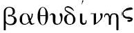
[4]描述的形象化．从传统来看，对于想象或智力的任何其他描述同样可以用单独一个符号来表示，其用法在所有本质的地方都服从和形容词“好的”或“伟大的”之用法一样的规律．与主词“事物”相结合，这样一个符号实际上将成为一个名词；而使用单独一个名词能够表达事物和属性两者的组合含义．6.既然将符号已经定义为一种任意的标记，这就允许我们用字母替换上述所有种类的符号．因此让我们商定单个字母如x代表个体类，对于它可以使用特定的名称或描述词．例如，如果名称是“男人”，则令x表示“所有男人”，或“男人”类．所谓类通常是指由个体组成的总体，对其每个个体我们可以赋予特定的名称或进行描述；但在本书中词项的意义将被扩展到包括只有单独一个个体符合所要求的名称或描述词的情形，以及由词项“虚无”和“全域”所表示的情形，它们作为“类”应被理解为分别由“无物”和“全部事物”组成．同样地，如果一个形容词比如“好的”被用作描述项，则令字母x表示描述词“好的”可以应用的所有事物，即“所有好的事物”，或“好的事物”类．
进一步，令组合xy表示可以同时应用由x和y所代表的名称或描述词的事物类．于是，如果x单独代表“白色的事物”，而y代表“羊”，则令xy代表“白羊”；同样，如果z代表“有角的事物”，而x和y保持先前的解释，则令zxy代表“有角的白羊”，即名称“羊”，描述词“白色的”和“有角的”可以共同应用的事物之总汇．
现在我们来考虑用于上述意义的符号x，y，等等所服从的规律．
7.首先，按照上面的组合，两个符号的书写次序显然是无关紧要的．表达式xy和yx同样都表示名称或描述词x和y可以一起应用于其若干成员的事物类．因此我们有
xy=yx. （1）
在x表示白色事物，y表示羊的情形中，这个等式两个成员中的任何一个都将表示“白羊”这个类．也许其中概念形成的次序存在差别，但是它所涵盖的单个事物之间并不存在差别．同样地，如果x表示“入海口”，而y表示“河流”，则表达式xy和yx将毫无区别地表示“入海口处的河流”，或“河流的入海口”，这一情形中的组合在日常语言中是由两个名词构成的，而不像在前一个例子中是由一个名词和一个形容词构成的．设有第三个符号z，表示词项“能通航的”可应用的事物类，则下列表达式
zxy，zyx，xyz，等等，
中的任何一个，都将表示“能通航的入海口处的河流”这个类．
如果描述词项之一隐含地指称另一个词项，那么只需明确地在其陈述的意义中将那个所指包括进来，以便使上述评论仍然能够适用．于是，如果x表示“聪明的”而y表示“律师”，那么我们将不得不定义是x在绝对的意义上有聪明的意思，还是指律师的聪明．按照这样的定义，规律xy=yx依然成立．
因此，我们有可能在名词，形容词和描述性短语的位置应用符号x，y，z，等等，它们服从解释规则：若干这样的符号写在一起的任何表达式将表示其若干涵义合起来可应用的对象或个体，还服从规律：符号的相继次序无关紧要．
因为解释规则已经得到充分的例示，所以我认为在确定用于形容词的某个符号的解释时，不必总是表达主词“事物”．当我说设x表示“好”时，将理解为当满足那种属性的主词由另一符号提供时，x仅表示“好”，而单独使用时，它的解释将是“好的事物”．
8.对于上面所确定的规律，可以附上如下评论，它们也大致适用于此后推导出的其他规律．
首先我要说的是，这一规律是一种思维规律，而且严格说来，不是关于事物的规律．除了所有的因果问题外，一个物体的品质或属性在等级方面的差别，仅仅是观念方面的差别．作为一个普遍真理，规律（1）表达的是同一事物可以从不同的方面来理解，并且说明了那种不同的本质；仅此而已．
其次，作为一种思维规律，它实际上是在语言规律中逐步形成的，语言则是思维的产物和工具．尽管散文写作的趋势趋向一致，然而即便在那里，具有独立含义且应用于同一主词的形容词串的顺序也是无关紧要的，但是诗歌的词语也从提供给名词的同样合法的自由中借用了非常丰富的多样性．弥尔顿的语言尤其以这种多样性著称．不仅名词常常位于限制它的形容词之前，而且经常位于它们之间．在祈求光明的最初几行，我们碰到了如下这样的例子：
现在这些倒置的形式不单是诗歌创新的产物．它们是对思维的本质规律所认可的自由之自然表达，但为便于交流还没有在语言的普通用法中运用．
第三，由（1）表达的规律其说法上的特点在于：字母符号x，y，z像代数符号一样是可交换的.这么说，并非断定代数中的乘法过程——其中的基本规律由等式
xy=yx
表达——本身与上述xy所代表的逻辑组合过程有任何相似性；而只是说算术过程和逻辑过程如果以相同的方式来表达，那么它们的符号表达式将服从同样的形式规律．这种服从的证据在两种情形中是相当明显的．
9.由于形式为xy的两个字母符号的组合表达的是x和y所代表的名称或属性可以一起应用的事物类的总体，所以由此可以推出如果两个符号具有完全相同的含义，那么其组合表达的不过是这两个符号之一单独应用时的结果．因此在这一情形我们应该有
xy=x．
然而，由于假设y具有与x相同的含义，因此我们得到
xx=x．
在普通代数中组合xx多半简记为x2.这里我们采用相同的记号原理；因为表达特定的一系列心智运作的方式本质上同表达一个单独的概念或操作一样随意（Ⅱ.3）．于是依照这个符号，上述等式具有形式
x2=x， （2）
并且，事实上表达的是那些代表名称，性质或描述词的符号的第二个一般规律．
读者必须记住，尽管符号x和y在前述例子中具有公认的彼此不同的含义，但是并没有什么阻止我们赋予它们刚好一样的含义．显然，它们彼此的实际含义越接近，组合xy所表示的事物类就越接近于等同x所表示的事物类，以及y所表示的事物类．在等式（2）的证明中假设的情形是绝对的含义上的恒等．它表达的规律实际上体现在语言中．关于任何对象，说“好，好”与说“好”是相同的，尽管听起来笨拙冗余．因此，“好，好”人等价于“好”人．这样的词语重复的确有时用来增强某种特性或加强某种肯定．但这一效果只是次要的和常规的；它并不是建立在语言和思维的内在联系的基础上．我们在自然界中观察到的或我们自己所进行的大多数操作属于这一类，它们的效果因重复而增强，这一情况使我们准备在语言中期待同样的事情，甚至我们打算在说话时用重复来强调．然而无论在严格的推理中，还是在确切的论述中，这样一种实践都没有任何合理的根据．
10.下面我们来讨论另一类语言表达符号，以及与其使用有关的规律．
类别Ⅱ
11.我们将部分聚合为一个整体或将一个整体分离成其部分所依靠的心智运作的符号．
我们不仅能够持有关于事物的观念，正如由可以应用于所考虑的群体中每个个体的名称，属性，或条件所刻画的那样，而且能够形成由部分群体构成的一群事物的集合观念，其中每一个则是被分别命名或描述的．为此目的我们使用联结词“和”，“或”，等等．“树和矿物”，“贫瘠的山地，或肥沃的山谷”就是这种例子．严格地说，置于描述两个或多个事物类的词项之间的词语“和”，“或”意味着那些类是完全不同的，因此在一个类中找不到另一个类的成员．从各方面看，词语“和”，“或”都类似于代数中的+号，而它们的规律是相同的．因此如果将通常的含义放在一边，那么“男人和女人”的表达与“女人和男人”的表达是等价的．令x代表“男人”，y代表“女人”；并令+表示“和”和“或”，则我们有
x+y=y+x， （3）
如果x和y代表数，+是算术的加法符号，那么这个等式同样成立．
令符号z代表形容词“欧洲的”，因为说“欧洲的男人和女人”与说“欧洲的男人和欧洲的女人”实际上是一回事，所以我们有
z（x+y）=zx+zy. （4）
这个等式当x，y，和z是数的符号，以及两个字母符号的并置代表它们的代数积（正如在前面给出的逻辑含义中，它代表两个形容词联合适用的事物类）时也同样成立．
以上是支配符号+的用法的规律，这里用来表示将部分聚合为一个整体的正向操作．然而正是这样一个产生某种正向改变的想法似乎使我们想到了一种相反的或负向的操作，其效果是撤销先前所进行的操作．因此我们不能认为可以将部分聚合为一个整体，而不认为也可以从一个整体分离出一部分．在日常语言中我们用除外符号表达这一操作，如“除亚洲人以外的所有人”，“除了君主制国家以外的所有国家”．这里意味着除去的事物形成了它们要被除去的那个事物的一部分．如同我们用符号+表达聚合操作一样，我们可以用减号-表达上述负向的操作．因此，如果选取x代表人，而y代表亚洲人，则概念“除亚洲人以外的所有人”可以用x-y来表达．如果我们用x代表“国家”，y代表描述性质“具有君主制的形式”，则概念“除了君主制国家以外的所有国家”可以用x-xy来表达．
正如我们在说话次序上最先还是最后表达除外情形对于一切必要的推理目标来说无关紧要一样，我们以什么次序写出任何一系列词项（其中有一些被-号作用）也是无关紧要的．因此如同在普通代数中一样，我们有
x-y=-y+x. （5）
仍用x代表“人”这个类，y代表“亚洲人”，设z表示形容词“白的”．则将形容词“白的”应用于短语“除亚洲人以外的人”，相当于说“除白亚洲人以外的白人”．因此我们有
z（x-y）=zx-zy. （6）
这也与普通的代数规律一致．
等式（4）和（6）可以当作一个单独的一般规律的范例，它可以表述为，字母符号x，y，z等在其运算中适用分配律.该定律所表达的一般事实是这样的，即：任一属性或状况如果被赋予一个要么由聚集部分群体要么由排除部分群体形成的群体的所有成员，则结果概念相当于先将属性或状况赋予部分群体的每个成员，然后再施行聚集或排除．赋予整体成员的属性或状况被赋予所有其部分的成员，无论如何，那些部分是被联接在一起的．
类别Ⅲ
12.表达关系的符号，借此我们形成命题．
虽然所有动词都可以适当地归属到这一类别，然而对于逻辑来说我们认为它仅包括存在动词是就足够了，因为任何其他的动词都可以转化为这个元，和包括在类别Ⅰ下的一个符号．正如那些符号被用于表达各种属性或状况一样，它们可以用来表达动词主语涉及过去，现在或未来时的主动或被动关系．于是命题“凯撒征服了高卢人”，可以转化成“凯撒是征服高卢人的那个人”．我认为这种分析的根据如下：——除非我们理解，征服了高卢人，即“征服高卢人的人”的表达是什么意思，否则我们就不能理解所讨论的语句．因此，它确实是那个语句的一个元；另一个元是“凯撒”，并且另外还需要系词是，以表明这二者的联系．然而，我不是说除了上面考虑的命题“凯撒征服了高卢人”表达的关系外就不存在其他方式了；而只是断言这里所给的分析对于已经采取的特定观点来说是正确的，并且这对于逻辑推演的目的而言足够了．可以说，希腊语的被动分词和将来分词意味着已经断言的原理的存在，即符号是可以看成是任何人称动词的一个元．
13.以上符号是可以用记号=表达．接下来讨论该记号引入的规律，或如通常所说的公理．
我们考虑命题“恒星是太阳和行星”，并且用x代表恒星，y代表太阳，z代表行星；因而我们有
x=y+z. （7）
如果恒星是太阳和行星为真，那么将推出除了行星以外的恒星是太阳．这将产生等式
x-z=y， （8）
因此它一定由（7）推出．于是通过改变其符号，一个项z被从等式的一边移到了另一边．这是与代数的移项规则相一致的．
然而我们可以先来肯定一般的公理，而不是详述特殊的情形：
第一，如果相等的事物被加到相等的事物上，则总体相等．
第二，如果从相等的事物中取出相等的事物，则剩余部分相等．
因此似乎我们可以加上或减去等式，而且正如在普通代数中那样使用移项规则．
再有：如果两个事物类x和y等同，即如果一个的成员都是另一个的成员，则一个类的具有给定性质z的那些成员将等同于另一个类的具有同样性质z的那些成员．因此如果我们有等式
x=y，
则无论z表示什么类或性质，我们也有
zx=zy.
这在形式上等同于代数定律——如果一个等式的两个成员都乘以同一个量，则积相等．
用类似的方式可以证明，如果两个等式的相应成员乘在一起，那么作为结果的等式成立．
14.然而，目前的系统与通常所说的代数系统在此进行的类比似乎走到了尽头．假设类x的具有某种性质z的那些成员与类y的具有相同性质z的那些成员等同，则并不能推出类x的成员完全等同于类y的成员．因此从等式
zx=zy，
不能推出等式
x=y
也成立．换句话说，代数学家的公理，即等式的两边可以除以相同的量在此没有形式的等价物．我说没有形式的等价物，是因为按照这些探究的一般精神，它甚至不试图确定是否从一个组合zx除去一个逻辑符号z的心智运作本身类似于算术中的除法运算．那种心智运作的确等同于通常所称的抽象，此后将会看到它的规律依赖于本章中已经推出的规律．现在我们已经表明的是，在那些定律中不存在任何形式上与通常公认的一个代数公理类似的东西．
但是稍作思考就会看出即便在通常的代数中那个公理也不具有我们考虑过的其他公理的那种一般性．从等式zx=zy推出x=y只有当已知z不等于0时才成立．因此如果假设在代数系统中允许值z=0，那么上述公理就不能应用，而先前举例说明的类比至少仍然有效．
15.然而，一般来说除作为一种推测问题外，并不是因为量的符号使得追寻这样的相似具有任何重要性．我们已经看到（Ⅱ.9）逻辑符号服从特殊的规律
x2=x．
目前关于数的符号只有两个，即0和1服从相同的形式规律．我们知道02=0，并且12=1；而当x2=x被视作代数方程时除0和1外没有其他的根．因此，对于我们更直接的启发是将它们与仅允许值为0和1的量作比较，而不是一般地确定逻辑符号与数的符号形式上一致的尺度．让我们设想一种代数，其中符号x，y，z，等等不分轩轾地取值0和1，并且只取这两个值．这样一种代数的定律，公理，和过程在其整体内容上都将等同于一种逻辑代数的定律，公理，和过程．区分它们的只有不同的解释．以下工作所使用的方法正是基于这一原则．
16.现在剩下来要说明的是，在本章前面各节中没有考虑的日常语言的那些组成部分或者可以分解为与已经考虑过的那些要素同样的要素，或者从属于那些被加以更精确定义的要素．
我们已经考虑了名词，形容词，和动词，以及小品词和，除去.代词可以看成是一种特殊形式的名词或形容词．副词修饰动词的意义，但不影响它的本质．介词有助于状况或关系的表达，因此常常为字母符号提供精确的和详尽的意义．连词如果，要么……要么主要用于表达命题之间的关系，以后我们将说明同样的关系可以完全用一种基本符号来表达，它们与本章已经阐述过其用途和意义的符号在解释上类似，在形式和规律方面等同．至于任何剩下的语言要素，经检查将会发现它们或者用于给语词提供更确定的意义，从而形成已经考虑的字母符号的解释的一部分，或者表达与一个命题的陈述相伴随的某些情感或知觉状态，因此不属于理解的范围，而我们目前所关心的只是后者．对于其使用的经验将证实已经采取的分类是充分的．
1.科学的对象，恰当地说是关于规律和关系的知识．能够从仅仅偶然与之关联的事物中区分出对这一目标来说是本质的东西，是科学进步最重要的前提之一．我说在这些因素之间作出区分，是因为对于科学的不懈追求并非要求我们的注意力完全脱离其他的，经常是带有形而上学性质的思考，它会时不时地与之关联．例如，像现象的维持理由之存在性，原因的真实性，意味着由运算连接的事物之相继状态的言语形式之恰当性这样的问题，以及其他类似的问题，也许本质上并不是科学的，但却具有与科学有关的极大兴趣和重要性．的确，如果不借助这些观念的语言就几乎不可能表达自然科学的结论．由这一源头也并不必然产生任何实际的麻烦．那些相信和那些拒绝相信在原因和结果的关系中存在不止一种恒定的相继顺序的人，在他们解释物理天文学的结论时达成了一致．但他们只是因为确认了一种独立于他们特定的因果观的科学真理之共同要素才达成一致的．
2.如果这种区分在物理科学中是重要的，那么它在与有关智力能力的科学的联系中更加值得注意．因为这门科学呈现的问题，至少在表达上几乎必然混合着思维模式和语言模式，它们显示出某种形而上学的起源．理想主义者会给推理规律提供一种表达形式；怀疑主义者——假如符合其原则的话——则会提供另一种形式．那些把我们在这一探究中考虑的现象看成仅仅是缺乏任何因果联系的思维对象的相继状态的人，和那些将它们当成一种能动的智力运作的人，即使可调和的话，同样在其陈述方式上存在差异．类似的差异也由关于心智官能分类的某种差异所导致．作为在如此多表面的和实质的多样性中给予我们的唯一信任和稳定基础，我将在此表明的原则如下，那就是，如果所论规律是由观测推导出的，则它们具有和人类心智的规律一样的真实存在，而且独立于它们的陈述方式似乎有可能涉及的任何形而上学理论．它们包含一种对于心智运作的本质乃至现实的任何别有用心的批评基本上都不能影响的真理因素．甚至假设心智只是既非外部因素引起也非内部因素引起，产生自虚无又回到虚无的一连串意识状态，一系列短暂印象——持怀疑态度之人的最终精妙用语，但作为一系列规律，或者至少过去的一系列规律，观测已经导致的结果依然是真实的．它们需要被解释成一种语言，诸如原因和结果，操作和对象，物质和属性这样的术语已经从其词汇表中排除；但它们作为科学真理仍是有效的．
而且，由于思维规律的任何表述都建立在实际观测的基础之上，因此一定包含独立于有关心智本质的形而上学理论的科学要素，这些要素对于构建一种推理系统或方法的实际应用，也一定独立于形而上学的特征．因为任何实际的应用都将依赖于规律的表述中所涉及的科学要素，正如物理天文学的实际结论独立于任何有关引力原因的理论，而仅依赖关于其现象的影响的知识一样．因此，对于思维规律的确定以及当它们被发现后的实际用途，就一切真正的科学目的而言，我们并不关心任何形而上学理论的真或假，无论它是什么．
3.在这些情况下，所采取的做法（对我来说它似乎是权宜之计）就是尽可能地利用日常谈话的语言，而不考虑有可能被认为是它体现的关于心智本质和能力的任何理论．例如，就通常的用法来说人们同意我们相互间是通过交流思想或观念进行交谈的，这种交流是言语的功能；至于任何呈现给它的特定想法或观念，心智则具有某种能力或官能，借此可以关注于某些想法而排除其他的想法，或借此给定的观念或想法被以各种方式组合在一起．人们已经对这些官能或能力赋予了各种名称，如注意力，单纯领悟，构想或想象，抽象等——这些名称不仅为有关人类心智的哲学之不同部门提供了名字，而且变成了人们的日常语言．于是，当有机会使用这些名称时我将这么做，但并不因此就意味着我接受心智具有这样或那样的能力和官能作为其活动的不同要素的理论．的确也无需探究这种理解力是否具有不同的存在形式．我们可以将这些不同的名称合并在人类心智的运作这个一般名称下，就本书的目的而言在需要时定义这些运作，然后试图表达他们的终极规律．这将是我所遵循的做法的一般顺序，尽管我也会偶尔提到有可能引起我们注意的特定之心智状态或运作的那些已经公认的名称．
最方便的做法是将以下研究的更为确定的结果分摊给不同的命题．
命题Ⅰ
4.从对严格使用作为一种推理工具的语言所暗示的那些心智运作之考虑推导出逻辑符号的规律．
任何论述，不管涉及的是心智与其自身思想的对话，还是个体与其他人的交流，都存在着一个假定的或表明的范围在其中它的讨论对象受到限制．最不受约束的讨论是那种我们在其中使用的词语被认为具有最广泛的应用可能性，对于它们来说讨论的范围和全域一样广泛．但更通常的做法是我们将自己限制在不太宽泛的领域．有时，在讨论人时我们暗示（而不表明限制）我们谈到的只是在某种环境和条件下作为文明人的人，或具有生命活力的人，或处在某些其他条件或关系中的人．于是，包括所有我们讨论对象的领域无论广泛程度可能如何，它都可以适当地被称为论域．
5.而且，这一论域在最严格的意义上是讨论的终极对象.在假定限制下使用的任何名称或描述项的功能不是要在心智中培育那个名称或描述项可适用的一切存在物或对象的观念，而仅仅是培育存在于假定论域内的那些对象的观念．如果那个论域是事物的实际范围——当我们的词语取其真实的和字面的意义时总是如此，那么就人来说我们指所有存在的人；但是如果论域被任何先前暗示的理解所限制，那么我们谈到的是在这样引入的限制下的人．在两种情形中，词语人的作用是指向某种心智运作，据此我们从合适的论域中选取或选定具有所示含义的个体．
6.使用形容词意味着完全一样的心智运作．例如，设论域是实际的宇宙．则由于人这个词引导我们凭心智从宇宙中选取词项“人”可应用的所有存在物；因此组合“好人”中的形容词“好”更进一步引导我们凭心智从人这个类中选取所有具有进一步属性“好”的那些人；如果在组合“好人”之前放上另一个形容词，那么它将引导到具有相同性质的进一步运作，涉及可能被选择来表达的进一步属性．
重要的是要仔细注意这里描述的运作的真正本质，因为可以想象得出，它有可能不同于它的本来面目．假如形容词的角色仅仅是修饰词，则似乎当一组存在物被定名为人时，前置形容词好就会引导我们在心智中对所有那些存在物附加上好的属性．但是这并非形容词的真正功能．我们实际进行的操作是按照一种指定的原则或想法做的一种选择．按照公认的对其能力的分类来研究这样一种操作将涉及心智的哪些官能，是没有任何特殊的意义的，但是我认为它将依赖于构想或想象以及专心这两种官能．这两种官能之一可能与一般观念的形成有关；另一种可能与心智关于指定论域中符合该观念的那些个体的确定有关．然而，正像看来有可能那样，如果专心能力不过是继续运用任何其他心智官能的能力，那么我们就可以将整个上述心智过程适当地看成可涉及想象或构想的心智官能，该过程的第一步是设想论域本身，而每个相继的步骤则是按某种确定的方式限制这样形成的观念．一旦采纳了这一观点，我将把每个这样的步骤，或任何确定的这种步骤的组合描述为一种确定的构想行为.我还将拓展这一术语的使用范围，使得其含义不仅包括由特定的名称或简单的品质属性表示的事物类的观念，而且也包括按与人类心智的能力和限度相一致的方式组合起来的这种观念；实际上包括除此之外和语句或命题的结构有密切关系的任何智力运作．我们现在来考虑这种心智运作所服从的一般规律．
7.下面将要表明对于字母逻辑符号的使用来说，前面一章中从语言构成角度出发后验地确定的规律，实际上是刚刚描述的那种明确的心智运作的规律．在开始我们的讨论的同时我们还要了解一些对于其对象的限制，即对于其论域的限制．我们所使用的每个名称，每个描述项都将我们与之讲话的人引向关于那个对象的某种心智运作的实现．因此是思想的交流．但是由于每个名称或描述项如此看来不过是某种智力运作的代表，并且该运作在自然顺序中也占据优先位置，所以显然有关名称或符号的规律一定具有推演出的特征，事实上，一定产生于它们所代表的运作的规律．我们将证明符号的规律与心智过程的规律在表达式上是等同的．
8.接下来让我们假设我们的论域就是实际的宇宙，以便词语在其完全的意义上被使用，我们考虑词语“白色的”和“人”所意味的两个心智运作．词语“人”意味着在思想中从宇宙这一对象选取所有的人这个运作；而作为结果的概念人，则成了下一个运作的对象．词语“白色的”意味着从“人”这一对象选取所有白色的那类这个运作．最终作为结果的概念是“白人”．十分显然的是如果上述运作以相反的次序进行，则结果是一样的．无论我们开始于形成“人”的概念，然后借助第二次智力行动将这一概念限制为“白人”，还是开始于形成“白色事物”这一概念，然后将其限制为“人”这个类，就所考虑的结果来说，是完全无关紧要的．显然，如果对于词语“白色的”和“人”不管我们用任何其他什么描述项或名词项替换，只要它们的含义是固定的和绝对的，则心智过程的次序同样是无关紧要的．因此，不理会构想官能两次相继行为的次序——其中之一为另一次提供了运作的对象——是运用那种官能的一般条件．它是一种心智规律，并且是构成第Ⅱ章形式表达式（1）的字母逻辑符号规律的真正来源．
9.同样清楚的是，上述心智运作具有这样一种性质使得其结果不因重复运作而改变．假定通过某种明确的构想行为我们专注于人类，再通过相同官能的运用我们将注意力限于其中的白色人种．于是关于后一心智行为的任何进一步的重复——通过它我们将注意力限于白色事物——都决不会改变构想所达到的结果，即白人．这也是一般心智规律的一个例子，它具有以字母符号规律［第Ⅱ章（2）］表现的形式表达式．
10.再有，显然从对两个不同事物类的构想我们可以形成一起取这两个类而组成的事物类的构想；那些类以什么样的位置次序或优先级别呈现给心智显然是无关紧要的．这是另一个一般心智规律，它的表达式出现在第Ⅱ章（3）．
11.不必继续遵循这一探究和比较路线．我们已经给出足够的例证使得以下立场是明显的，即：
首先，心智运作服从一般的规律，通过运用其想象或构想能力，心智结合并修改有关事物或属性的简单概念，不亚于运用在真值和命题上的那些推理操作．
其次，那些规律在形式上是数学的，它们实际上是在人类语言的基本规律中逐渐形成的．因此逻辑符号规律是可以从对推理中的心智运作的讨论推导出的．
12.本章剩下的部分将讨论与表达式为x2=x（Ⅱ.9）的思维规律有关的问题，正如我们已经暗示的（Ⅱ.15），与从事一般的量的代数时的心智运作相比，这一规律形成了在其通常论域和推理中的心智运作的特征区别．以下探讨中的一个重要部分在于证明符号0和1在逻辑符号中占有一席之地，并允许接受某种解释；也许首先必须要说明像上面的那种特定符号如何可以恰当和方便地被用来表示不同的思维系统．
这一恰当性的基础不能存在于任何解释的共同性中．因为在像逻辑和算术（我在数的科学这一最广泛的意义上使用后一术语）那样如此真正不同的思维系统中，严格地说，不存在任何主题的共同性．其中的一个与事物的真实概念有关，另一个仅考虑它们的数值关系．但是鉴于任何推理系统的形式和方法直接依赖于符号所服从的规律，而只是间接地通过上面的连接物的联系依赖于它们的解释，因此在不同的思维系统中使用相同的符号可能是既恰当又便利的，只要这样的解释能够指派给它们使得它们的形式规律恒等，它们的使用前后一致．因此那种应用的基础将不是解释的共同性，而是在其各自系统中它们所服从的形式规律的共同性．除了对我们所见独立地出自正在考虑的系统之解释的那些结果进行仔细观察和比较外，这种形式规律的共同性不必建立在任何别的基础之上．
这些评论将说明下列命题所采取的探究过程．字母逻辑符号普遍服从于表达式为x2=x的规律．在数的符号中只有两个，0和1，满足这个规律．但这些符号中的每一个也服从数量系统中独有的规律，这就启发我们去研究必须给予字母逻辑符号什么样的解释，以便同样独有的和形式的规律也可以在逻辑系统中实现．
命题Ⅱ
13.确定符号0和1的逻辑值和意义．
正如在代数中的用法一样，符号0满足下列形式规律：
0×y=0 或 0y=0， （1）
而无论数y可能代表什么．这一形式规律可以在逻辑系统中成立，我们必须赋予符号0这样一种解释使得0y代表的类可以等同于0代表的类，无论类y可能是什么．稍作思考就会看出如果符号0表示虚无则满足这一条件．按照先前的定义，我们可以将虚无称为一个类．事实上，虚无和全域是类广延的两个界限，因为它们是普通名称的可能解释的界限，其中没有哪一个涉及比组成虚无还少的个体，或者涉及比构成全域还多的个体．无论类y可能是什么，它和“虚无”类共有的个体与组成“虚无”类的个体是等同的，因为它们什么都没有．因此通过将0解释成虚无，规律（1）得以满足；否则它无法始终如一地满足类y的完全一般的特征．
其次，在数系统中符号1满足下列规律，即
1×y=y，或1y=y，
无论数y可能代表什么．假定这一形式方程在本书的系统中同样正确，其中1和y表示类，符号1看来必须表示这样一个类使得在任何给出的类y中遇到的所有个体也是在1y中的所有个体，即类y和1代表的类的共同个体．在此稍作思考就会看出1表示的类一定是“全域”，因为这是在其中能找到任何类中存在的所有个体的唯一的类．因此符号0和1在逻辑系统中各自的解释分别是虚无和全域．
14.由于对于任何像“人”那样的事物类的概念，都使心智想起相反的非人的存在物的类之概念；并且由于整个全域是由这两个类一起组成的，因为我们可以断言它包含的每个个体要么是人，要么不是人，所以探究如何表达这样的相反名称是件十分重要的事情．这是下列命题所考虑的对象．
命题Ⅲ
如果x代表任何事物类，则1-x将表示相反的或相补的事物类，即包括不含在类x中的所有事物的类．
为使概念更加清晰起见，令x表示人这个类，并根据上面最后一个命题用1表示全域；现在如果从由“人”和“非人”组成的全域概念除去“人”的概念，那么作为结果的概念就是相反的类“非人”．因此“非人”这个类将被表示成1-x.一般来说，无论符号x表示何种事物类，相反的类都将表达成1-x．
15.尽管以下命题严格地说属于本书今后专门讨论普遍真理或必然真理的一章，但是，由于它所涉及的思维规律的极其重要性，我认为在此引入它是合适的．
命题Ⅳ
称为矛盾原理的形而上学家的公理——它断言任何存在物不可能既具有某种性质同时又不具有那种性质，是表达式为x2=x的基本思维规律的一个推论．
我们将这一方程写成形式
x-x2=0，
据此我们有
x（1-x）=0. （1）
这两个变形由作为公理的组合律和移项律（Ⅱ.13）证明是成立的．为使概念简明起见，我们赋予符号x以人这一特定解释，则1-x表示类“非人”（命题Ⅲ）．既然两个类的表达式的形式乘积表示两者共有的个体之类（Ⅱ.6），因此x（1-x）表示其成员同时是“人”又是“非人”的类，于是方程（1）表达的是原理，不存在其成员同时是人又是非人的一个类．换句话说，同一个体同时既是人又是非人是不可能的．现设符号x的含义从表示“人”推广到由具有任何无论什么属性刻划的任何存在物的类；于是方程（1）将表示对于一个存在物来说不可能具有某种属性同时又不具有那种属性．而这等同于“矛盾原理”，亚里士多德已经将其描述为一切哲学的基本公理．“同一属性不可能既属于又不属于同一事物……这在所有原理中是最为肯定的……这就是为什么那些从事证明的人把它当作一种终极意见的原因．因为本质上它是所有其他公理的根源．”[6]
引入以上解释不是因为它在本系统中的直接价值，而是作为对智力哲学中的一个重要事实的说明，即通常被认为是基本的形而上学公理不过是某个具有数学形式的思维规律的推论．我还想直接关注用来表达那个基本思维规律的方程（1）是一个二次方程的情形．[7]在本章中丝毫没有对那种情形本质上是否必需的问题进行思考的前提下，我们可以大胆断言，如果它不存在，那么整个理解过程将全然不同．因此我们通过划分成相互对立的对偶，或用术语讲，通过二分法进行的分析和分类操作，是基本的思维方程为二次的这一事实的一个结果．如果所讨论的方程是三次的，仍然允许这样的解释，那么心智划分一定是三重的，而我们一定得通过一种三分法来进行，虽然利用我们现有的官能，不足以设想它的真正本质，但是我们仍能将其规律作为一种智力思考的对象加以研究．
16.由于以上讨论所阐明的原因，我们将时不时地称方程（1）表达的思维规律为“二重律”．
1.在研究了与构想或想象过程有关的那些心智运作的规律，并且解释了用于表示它们的相应符号规律后，我们该到考虑所得结果实际应用的时候了：首先，是在表达命题的复合项中的应用；其次，是在表达命题中的应用；最后，是在构建一般的演绎分析方法中的应用．在本章中我们将主要讨论这些对象当中的第一个，作为先导有必要建立如下命题：
命题Ⅰ
所有的逻辑命题都可以看成是属于两大类命题中的一类或另一类，对它们可以分别赋予“初级的”或“具体的命题”和“二级的”或“抽象的命题”之名称．
我们作出的每一个断言可以认为属于下面两种中的一个或另一个．要么它表达的是事物之间的一种关系，要么它表达，或等价于表达命题之间的一种关系．关于事物的属性，或关于它们显示的现象，或关于它们所处的环境的断言，恰当地说是对事物之间某种关系的断言．说“雪是白的”就逻辑目的而言等价于说“雪是一种白色的事物”．关于事实或事件，它们的相互关联和依赖的某种断言，就相同的目的来说，通常等价于断定关于那些事件的这样那样的命题在涉及它们彼此的真或假方面具有某种相互关系．前一类命题与事物有关，我称“初级的”；后一类命题与命题有关，我称“二级的”．事实上这一区分差不多相当于但并不完全等同于普通逻辑中将命题区分为直言的或假言的．
例如，命题“太阳闪耀光芒”，“地球是温暖的”是初级的；命题“如果太阳闪耀光芒那么地球是温暖的”是二级的．说“太阳闪耀光芒”就是说“太阳是闪耀光芒的事物”，它表达的是两个事物类，即“太阳”和“闪耀光芒的事物”之间的关系．然而，上面给出的二级命题表达的是两个初级命题“太阳闪耀光芒”和“地球是温暖的”之间的依赖关系．我并不因此肯定这些命题之间的关系就像是它们表达的事实之间存在的那样，是一种因果关系，而只是肯定命题之间的关系如此蕴含事实之间的关系，以及命题之间的关系如此被事实之间的关系所蕴含，就逻辑的目的而言它可以用作那种关系的一个合适的代表．
2.如果取代命题“太阳闪耀光芒”我们说“太阳闪耀光芒是真的”，那么我们没有直接谈到事物而是谈到有关事物的一个命题，即“太阳闪耀光芒”．因此，我们这样谈到的命题是一个二级命题．于是每个初级命题都可以产生一个二级命题，即产生断言其真或宣布其假的那个二级命题．
通常会出现的情况是，小品词如果，要么，要么表明一个命题是二级的；但是它们并不必然意味着情况是这样．命题“动物是要么有理性的要么非理性的”是初级的．它不能分解为“要么动物是有理性的，要么动物是非理性的”，因此它不表达后一析取语句中联结在一起的两个命题之间的依赖关系．小品词要么，要么事实上并非命题性质的判断标准，尽管我们常常发现它们出现在二级命题中．甚至在初级命题中也可能找到联结词如果.“人，如果聪明的话，是有节制的”就是这样一个例子．它不能被分解成“如果所有人是聪明的，那么所有人是有节制的”．
3.因为我的目的不是讨论通常的命题划分的优点或缺点，因此这里我只评论说，目前的分类所基于的原则在应用上是清晰和明确的，它涉及命题中真实而基本的区别，并且它对于一般的推理方法的发展是十分重要的．一个初级命题可以被完全翻译成二级命题的形式这个事实与这里所持的观点并不冲突。因为在这样假设的情形中，任何直接考虑的对象不是初级命题中联结在一起的事物，而只是被看成真或看成假的命题本身。
4.在表达初级命题和二级命题时，本书将使用相同的符号，我们将会看到这些符号服从相同的规律．两种情形之间的差别不在于形式而在于解释．在两种情形中实际的关系将用符号=来表示，它是命题要表达的对象．在初级命题的表达式中，这样联结起来的成员通常代表一个命题的“词项”，或者如更专门的名称所指的那样，表示它的主词和谓词．
命题Ⅱ
5.对于可以构成初级命题的“词项”的任何事物类或事物的汇集的表达式，基于各种可能的列举，推演出一般的方法．
首先，如果要表达的事物类或汇集只由它包含的所有个体的共同名称或属性定义，那么它的表达式将由单独一个词项组成，其中表达那些名称或属性的符号将组合在一起而不需任何连接符号，就好像代数中的乘法过程一样．因此，如果x表示不透明的物质，y表示有光泽的物质，z表示石头，我们有，
xyz=不透明有光泽的石头；
xy（1-z）=不透明有光泽而非石头的物质；
x（1-y）（1-z）=不透明没有光泽，且非石头的物质；
对于任何其他的组合也如此．我们注意到，像它所包含的单个符号一样，这些表达式的每一个都满足相同的二重律．于是，
xyz×xyz=xyz；
xy（1-z）×xy（1-z）=xy（1-z）；
等等．对于任何上面这样的词项我们将命名为“类项”，因为它借助于这种类的个体成员的共同性质或名称表达了一个事物类．
其次，如果我们谈论的一组事物其不同部分由不同的性质，名称，或属性定义，那么必须要分别形成那些不同部分的表达式，然后用符号+连接起来．但如果我们想要谈论的那组事物是由某个更广大的组排除了其成员的一个确定的部分形成的，那么符号-必须置于被排除部分的符号表达式之前．有关这些符号的使用我们可以作进一步的评论．
6.一般来说，符号+相当于连词“和”，“或”；符号-相当于介词“除外”．至于连词“和”与“或”，前者通常用于要描述的汇集构成一个命题主语的时侯，后者通常用于它构成一个命题谓语的时侯．“学者和老于世故者渴求幸福”，可以当作其中一种情形的例证．“具有功效的事物要么产生快乐要么防止痛苦”，可以提供另一种情形的例子．当含有这些小品词的一个词语出现在一个初级命题中时，了解在思想中被它们分开的组或类是否意味着彼此完全不同且相互排斥就变得极其重要．词语“学者和老于世故者”包括还是排除了那些二者皆是之人？词语“要么产生快乐要么防止痛苦”包括还是排除了那些具有这两种属性的事物？我理解连词“和”，“或”按照严格的含义确实具有这里所指的分离或排斥功能；形式化表述“所有x要么是y要么是z”，按照严格的解释，意思是“所有的x要么是y，但不是z”，要么，“是z但不是y”．但同时必须承认，“语法和语言规则”（jus et norma loquendi）似乎更倾向于相反的解释．表述形式“要么是y要么是z”，一般地将被理解成同时包括既是y又是z的事物，以及属于其中之一但不属于另一个的事物．然而，要记住符号+确实具有曾经讨论的分离功能，我们必须将面前的任何析取表达式分解成在思想中真正分离的元，然后用符号+连接起它们各自的表达式．
因此，根据暗含的意义，表述形式“要么是x要么是y的事物”将具有两种不同的符号等价物．如果我们意指“是x但不是y，或者是y但不是x的事物”，则表达式为
x（1-y）+y（1-x），
符号x代表全体x，符号y代表全体y.然而，如果我们意指“要么是x，要么假如不是x就是y的事物”，则表达式为
x+y（1-x），
这一表达式假定了允许同时既是x又是y的事物．它可以更完全地表示成形式
xy+x（1-y）+y（1-x），
但这一表达式在将前两项加起来后，只是重新产生出前一表达式．
请注意上面给出的表达式满足基本的二重律（Ⅲ.16）．因此我们有
{x（1-y）+y（1-x）}2=x（1-y）+y（1-x），
{x+y（1-x）}2=x+y（1-x）．
以后我们将会看到，这只是表示“事物的类或汇集”的表达式之一般规律的一种特定表现形式．
7.这些研究的结果可以具体化为下面的表达式规则．
规则 用符号x，y，z，等等表示单独的名称或属性，它们的对立表示成1-x，1-y，1-z，等等；由普通名称或属性定义的事物类用像在乘法中那样连接相应的符号表示；由彼此不同的部分组成的事物汇集用符号+连接那些部分的表达式表示．特别，令表达形式“或者是x或者是y”，当由x和y表示的类相互排斥时表示为x（1-y）+y（1-x），当它们不相互排斥时表示为x+y（1-x）．类似地，令表达形式“或者是x，或者是y，或者是z”，当由x，y和z表示的类设定为相互排斥时表示为x（1-y）（1-z）+y（1-x）（1-z）+z（1-x）（1-y），当它们不是相互排斥时表示为x+y（1-x）+z（1-x）（1-y），等等．
8.相反的解释规则建立在这一表达式的基础之上．在以下例子中我们对于这两者都将给出（或许是）足够完全的具体说明．为简洁起见我们略去一般主语“事物”，或“存在物”，假设
x=坚硬的，y=有弹性的，z=金属，
则我们有下列结果：
“没有弹性的金属”，表示为z（1-y）；
“弹性物质以及没有弹性的金属”，表示为y+z（1-y）；
“除金属外的坚硬物质”，表示为x-z；
“除那些既不坚硬也没弹性的金属以外的金属物质”，表示为
z-z（1-x）（1-y），或z{1-（1-x）（1-y）}，参见第Ⅱ章（6）．
在最后一个例子中，我们实际表达的是“除了不坚硬，没弹性的金属以外的金属”．用于形容词之间的连词通常是多余的，因此不必用符号来表达．
于是，“坚硬的且有弹性的金属”等价于“坚硬的有弹性的金属”，并被表示成xyz．
接下来考虑表达形式“除那些既是金属又没弹性和那些既有弹性又非金属外的坚硬物质”．这里词语那些的含义是坚硬物质，因此这个表达形式的实际含义是，除金属的非弹性的坚硬物质和非金属的有弹性的坚硬物质以外的坚硬物质；词语除外的作用延伸到了紧随其后的两个类．完整的表达式则是
x-{xz（1-y）+xy（1-z）}，
或 x-xz（1-y）-xy（1-z）．
9.前面的命题，以及我们已经给出的关于它的各种说明，对于下列命题来说是一个必要的准备，由此将完成本章的计划．
命题Ⅲ
从对初级命题或具体命题各种可能变形的考察推演出表达它们的一般方法．
从最一般的意义上说，一个初级命题由两个词项构成，其间被断言存在着某种关系．这些词项不必是单一词语表示的名称，而可以代表任何的对象汇集，如我们曾在前面的章节中考虑过的那样．因此，那些词项的表达方式包含在上面给出的一般规则中，唯一剩下的是要找到如何表达词项之间的关系的方法，尤其是有关词项在这一关系中被理解为全称的还是特称的问题，即我们谈论的是词项所指的那个对象汇集的整体，还是前缀“某些”的通常含义所指的总体的不定属性或它的某个部分．
假设我们想要表达“恒星”和“太阳”这两个类之间的一种恒等关系，即表达“所有的恒星是太阳”以及“所有的太阳是恒星”．在此，如果x代表恒星，y代表太阳，那么我们所要求的等式就是
x=y．
在命题“所有的恒星是太阳”中，词项“所有的恒星”将被称为主词，而“太阳”则被称为谓词.假设我们以下面的方式对术语主词和谓词的含义进行推广．所谓主词我们指任何肯定命题的第一个词项，即在系词是之前的词项；所谓谓词我们都是指第二个词项，即紧随系词之后的词项；并且我们允许假设这两个词项可以要么是全称的，要么是特称的，因此，在两种情形的任何一个中，可以意味着要么是全类，要么是它的一部分．于是对于上一个例子中的情形，我们有以下规则：
10.规则 当一个命题的主词和谓词两者都是全称的时，分别构成它们的表达式并用符号=将它们连接起来．
这一情形通常出现在科学定义的表达中，或出现在仿效纯粹科学处理的学科中．西尼尔（Senior）先生关于财富的定义为这种情形提供了一个很好的例子，即：
“财富由可转让的，限供的事物构成，并且要么产生快乐要么防止痛苦．”
在对这一定义用符号进行表达之前，必须注意到连词并且是多余的．财富实际上是由它具有的三个性质或属性定义的，而不是由三个事物类或汇集组成的．因此略去连词并且，我们令
w=财富，
t=可转让的事物，
s=限供的事物，
p=产生快乐的事物，
r=防止痛苦的事物．
由主词的性质显而易见，上面定义中的表达形式“要么产生快乐要么防止痛苦”，在意思上与“要么产生快乐；否则，如果不产生快乐，就防止痛苦”是等价的．因此上面表达形式定义的事物类单独来看将包括所有产生快乐的事物，以及所有不产生快乐但防止痛苦的事物，它的符号表达式是
p+（1-p）r．
于是如果我们将这一表达式置于括号内表示它所涉及的两个项，附加上符号s和t限制其应用到“可转让的”和“限供的”事物，那么对于原始定义我们就得到下面的符号等价式，即
w=st{p+r（1-p）}. （1）
如果表达形式“要么产生快乐要么防止痛苦”打算仅仅指那些产生快乐而不防止痛苦的事物，p（1-r），或者仅仅指那些防止痛苦而不产生快乐的事物，r（1-p）（排出了那些既产生快乐又防止痛苦的事物），那么该定义的符号表达式为
w=st{p（1-r）+r（1-p）}. （2）
所有这一切都与以前更一般的说明相一致．
读者可能好奇地要问，如果我们把表达形式“产生快乐或防止痛苦的事物”照字面翻译成p+r，使该定义的符号方程为
w=st（p+r）， （3）
会产生什么样的结果．回答是，这一表达式将等价于（2），并具有附加含义：由stp和str代表的事物类完全不同，因此对于可转让的事物和限供的事物，在全域中不存在同时既产生快乐又防止痛苦的那种东西．以后我们将解释如何来确定任何一个方程的完整意义．我们已经论述过的可以表明，在尝试将数据翻译成严格的符号语言之前，首先有必要确定我们所使用的词语的预期意义．但这一必要性不能被那些重视思维的正确性，并把语言的正确使用当做思维之工具和保证的人视为一种恶行．
11.我们接下来考虑命题的谓词是特称的情形，例如，“所有人都是会死的”．
在此情形，我们的含义显然是“所有人都是一些会死的生物”，而我们必须要寻求谓词“一些会死的生物”的表达式．因此，用v表示除此之外的任何方面都不确定的一个类，即它的成员中有些是会死的生物，并设x代表“会死的生物”，则vx表示“一些会死的生物”．因此如果y表示人，那么要寻求的方程将是
y=vx．
从这些讨论我们得出下列规则，用来表达其谓词是特称的一个全称肯定命题：
规则 像以前一样表达主词和谓词，对于后者附加上不定符号v，并使表达式相等．
显然v是和x，y等同一种类的符号，于是它服从一般规律
v2=v，或v（1-v）=0．
因此，为了表达命题“行星要么是初级的要么是二级的”，根据规则，我们应该这样进行：
令x表示行星（主词）；
y=初级的天体；
z=二级的天体．
接着，假设连词“或”绝对地将“初级的”天体之类与“二级的”天体之类相分离，就我们在所给命题中对它们的考虑而言，我们给出该命题的方程为
x=v{y（1-z）+z（1-y）}. （4）
值得注意的是，在这一情形中将该前提照字面翻译成形式
x=v（y+z） （5）
是完全等价的，v是一个不定类符号．然而，形式（4）更好，因为表达式
y（1-z）+z（1-y）
由表示彼此完全不同的项组成，并满足基本的二重律．
如果我们以命题“天体要么是太阳，要么是行星，要么是彗星”为例，用w，x，y，z分别表示这些事物类，那么在没有天体同时属于上述两个分组项目的假设下，它的表达式将是
w=v{x（1-y）（1-z）+y（1-x）（1-z）+z（1-x）（1-y）}．
然而，如果它的意思是指天体要么是太阳，要么，若不是太阳，则是行星，要么，若既非太阳，也非行星，则是彗星[8]，不排除它们中的一些同时属于太阳，行星和彗星①三个分组项目中的两个或全部三个的假设，那么所要求的表达式将是
w=v{x+y（1-x）+z（1-x）（1-y）}. （6）
上面的例子属于描述类，而不是定义．的确，命题的谓词通常是特称的．当情况并非如此时，要么谓词是一个单一词项，要么我们使用一些连接形式以代替系词“是”，这意味着谓词取全称形式．
12.下面考虑全称否定命题的情形，例如，“没有人是完美的生物”．
显然在这一情形我们谈论的不是一个称作“没有人”的类，并对这个类断言它的所有成员是“完美的生物”．我们实际上是关于“所有人”作了一个断言，相当于说他们是“不完美的生物”．因此该命题的真实含义为：
“所有人（主词）是（系词）不完美的（谓词）”；据此，如果y代表“人”，x代表“完美的生物”，我们就有
y=v（1-x），
并且在其他情形中也类似．因此我们有下面的规则：
规则 为了表达“没有x是y”形式的命题，将其转换为形式“所有x是非y，然后像前一情形那样依次进行下去．
13.最后，考虑其中命题的主词是特称的情形，例如，“有些人是不聪明的”．正如曾经说过的，这里的否定词不至少就逻辑的目的而言，的确可以严格地指称谓词聪明的；因为我们所说的意思并非“有些人是聪明的”是不真实的，而是想断定“有些人”缺乏聪明的属性．因此，所要求的已知命题的形式为“有些人是非聪明的”．于是，设y代表“人”，x代表“聪明的”，即“聪明的生物”，引入v作为除此之外的所有方面都不确定的一个类的符号，这个类包含其形式被它前置的那个类的一些个体，我们有
vy=v（1-x）．
14.我们可以用下面的一般规则囊括我们已经确定的一切：
初级命题符号表达式的一般规则
第一，如果命题是肯定的，则构作主词和谓词的表达式．假如它们中任何一个是特称，就将不定符号v附加于它，然后使作为结果的表达式相等．
第二，如果命题是否定的，首先通过将否定小品词添加到谓词表达其真实含义，然后按上面的步骤进行．
再举一两个例子足以对此进行说明．
例 “没有人处于高位，又免遭妒忌”．
令y代表人，x代表“处于高位”，z代表“免遭妒忌”．
则“处于高位”，并且“免遭妒忌”所描述的类的表达式为xz.因此相反的类，即这一描述不适用的那一类将用1-xz来表示，而对这一类所有的人都涉及．因此我们有
y=v（1-xz）．
如果这样表达的命题用等价形式“处于高位的人是无法免遭妒忌的”替代，那么它的表达式将是
yx=v（1-z）．
以后将看到，在所涉及的特定假设下，即v是一个不定类符号，这一表达式实际上与前一个是等价的．
例 “没有人是英雄，那些将自我否定结合上勇气的人除外”．
令x=“人”，y=“英雄”，z=“实践自我否定的那些人”，w=“具有勇气的那些人”．
该断言实际上是“不具有勇气且不实践自我否定的人不是英雄”．
因此我们有
x（1-zw）=v（1-y）
为所求方程．
15.在要结束本章的时候，我们把用符号表达的最主要的命题类型一起作一比较也许是有趣的．如果我们同意用X和Y代表”词项”或有关事物的符号表达式，那些类型就是
X=vY，
X=Y，
vX=vY．
在第一个中，只有谓词是特称的；在第二个中，两个词项都是全称的；在第三个中，两个都是特称的．一些次要的形式实际上包括在这些当中．因此，如果Y=0，则第二个形式成为
X=0；
而如果Y=1，它成为
X=1．
它的两个形式都允许解释．进一步注意到，表达式X和Y，如果以对命题“词项”之意义的一种充分细致的分析为基础，则满足所要求的基本二重律，从而我们有
X2=X或X（1-X）=0，
Y2=Y或Y（1-Y）=0．
1.本书前面各章专门探讨了推理中的心智运作的基本规律；其表现为逻辑符号规律的展开式；以及表达式的原理，据此那种所谓的初级命题可以表示成符号语言．这些讨论就最严格的意义来说是预备性的．对于本书的主要目标之一——在精确地概括基本的思维规律基础上构建某种逻辑系统或方法，它们构成了一个必不可少的导引．还存在着关于这一目标的本质，和达至它的方法的一些思考，我认为有必要在此加以注意．
2.首先我想说的是逻辑中某种方法的一般性必须在很大程度上依赖于其初级过程和规律的一般性．例如，在本书前面的章节中我们已经讨论过用符号+表达的加法那种逻辑过程的规律．这些规律已经由对例子的研究所确定，就所有这些例子而言，在思维中加起来的类或事物应该互相排斥已经成为一个必要条件．表达式x+y似乎确实是不可解释的，除非假定x表示的事物与y表示的事物完全分离；即它们不包括共同的个体．与此类似的条件已经在那些构想行为中涉及到，从对它们的研究我们已经弄清了其他符号操作的规律．于是产生这样的问题，是否有必要通过相同的解释性条件限制这些符号规律和过程，在该条件下我们获得了关于它们的知识．如果说这样的限制是必要的，则显然不可能有像逻辑中的一般方法这种东西．另一方面，如果说这样的限制是不必要的，那么我们从何种角度去思考那些在它们预备提供帮助的思维领域中似乎是不可解释的过程？这些问题不只属于逻辑科学．它们同样和基于使用某种符号语言的人类推理之所有发展形式都有关．
3.其次我注意到，过程与解释之间这种明显的对应缺失在人类理性的通常运用中并不出现．因为关于在那里进行的运作没有哪一个的意义和应用是人们不理解的；而对于大多数的心智来说仅由形式推理连接其前提和结论是不够的；相反，连接链的每一步，证明过程中所建立的每个中间结果也必须是可理解的．无疑，在日常生活的推理和谈话中，这既是一个现实条件，也是一个重要保证．
也许有很多人想要把同样的原理推广到作为推理工具的符号语言的通常使用上去．可以指出的是，由于支配符号应用的规律或公理是以对那些允许解释的情形之研究为基础建立起来的，因此我们无权将它们的应用推广到解释在其中是不可能的或令人怀疑的其他情形，尽管（如应该准许的那样）这种应用只用于证明的中间步骤．即使这种反对是决定性的，也必须承认我们将从逻辑的一种符号方法的使用中获得少许益处．也许该益处将限于使用简洁方便的符号代替较为笨拙的符号这种工具性收益．然而这一反对本身是错误的．无论我们的先验预期可能是什么，由任何符号推理过程得出的结论之有效性不依赖于我们解释那些已经在研究的不同阶段呈现它们自身的形式结果之能力，却是一个不争的事实．实际上，存在着某些与符号方法的使用有关的一般原理，因为属于特定的逻辑主题，我将首先表述它们，接下来我将对它们获得认同的本质和根据作些评论．
4.借助符号进行有效推理的条件是：
第一，对于数据表达式中使用的符号指派一个固定的解释；那些符号的组合规律由该解释完全确定．
第二，求解和证明的形式过程自始至终按照上面确定的规律的要求进行，而不考虑所得特定结果的可解释性问题．
第三，最终结果在形式上是可解释的，它实际上是按照已经用于数据表达式的解释系统来解释的．关于这些原理，可以作出以下评论．
5.我们已经充分阐述了（Ⅱ.3）关于符号的固定解释的必要性．固定结果应该以这样一种形式准许应用该解释之必要性，是以这种显然的原理为基础的，即符号的使用是朝向一个目标的一种手段，而那个目标是关于某个可理解的事实和真理的知识．并且这一目标可以被达到，表达符号结论的最终结果必须具有一种可解释的形式．然而，与上述一般原理或条件（Ⅴ.4）的第二个有关，它是有可能使人感受到的最大困难，关于这一点有必要再多说几句．
那么我要说的是，可以认为所讨论的原理依赖于一般的心智规律，有关它的知识不是先验的，即先于经验地赋予我们的，而是像关于其他心智规律的知识一样，是从对特定例子中的一般原理的清晰展现中得到的．一个单独的推理例子——其中符号的使用服从在其解释的基础上建立的规律，但并不维持那个解释，证明之链引导我们通过不可解释的中间步骤，到达可解释的最终结果——似乎不仅建立起特定应用的有效性，而且使我们了解其中展现的一般规律．任何例子的堆积都不能增加这一证据的份量．它可以向我们提供应用该原理所依赖的那种共同真理因素之较为清晰的概念，从而为人们接受它铺平道路．在没有感觉到直接的证据效力的地方，它可以充当关于所论原理之实际有效性的一种后验的证实方法．但是这并不影响要确认的立场，即一般原理必须见于特定的例子之中，必须在应用中显示出一般性以及在特殊例子中表现出真实性．在三角学的中间过程中使用不可解释的符号
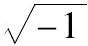
，为上述说法提供了一个例证．我感觉解释那种应用的任何方式无一不暗中假设了所论及的这个原理．然而我想，那个原理尽管没有被基于其他理由的形式推理所证实，但它在那些从某种意义上讲构成一般知识的可能性之基础的自明真理中，似乎值得占有一席之地，并且可以被适当地看成心智自身规律和构成的表达式．6.下面是在本书中应用上述原理的模式．我们已经看到，任何一组命题都可以用涉及符号x，y，z的方程表达，当可解释时，它们所服从的规律在形式上与仅取值0和1的一组量的符号的规律相等同（Ⅱ.15）．但是由于形式的推理过程仅依赖于符号的规律，而不依赖于其解释的属性，因此允许我们将符号x，y，z当作好像是上述那种量的符号一样来对待．事实上我们可以把给定方程中符号的逻辑解释放在一边；将它们转换成量的符号，只允许值0和1；针对它们本身执行所有必需的求解过程；最后恢复它们的逻辑解释．这是我们将实际采取的处理方式，尽管我们认为没有必要在每个例子中都重申所应用的转换的本质．被当作量的符号和上述种类的符号x，y，z，遵循的过程，如果针对纯粹的逻辑符号来进行的话，则不受它们所服从的那些思维条件的限制，而在我们使用它们时，给我们以一种运算的自由，没有它，对于逻辑中一种一般方法的探求将会是毫无希望的．
注意上面的过程系统会把我们引向不可解释的结果，除非由此导出的逻辑方程具有一种形式使得它们的解释在恢复了符号的逻辑意义后成为可能．然而，存在一种将方程归约为这样一种形式的一般方法，本章余下的部分将对此进行讨论．我将极少谈到该方法使得解释成为可能的方式，把这一点保留到下一章，而在这里主要将自己限于所使用的纯粹过程，它可以被刻画成一种“展开”过程．作为关于这一过程的引导，首先谈几点看法或许是适当的．
7.假设我们正在考虑涉及这一问题的任何事物类，即它的成员处在具有或缺乏某种性质x的关系中．由于每个个体在所讨论的类中要么具有要么不具有所说的性质，所以我们可以将这个类分成两部分，前者包括那些具有该性质的个体，后者包括那些不具有该性质的个体．在思想中将整个类划分为两个组成部分这种可能性先于所有关于从其他来源得到的类之组成的知识；有关这一知识该结果只能大致精确地告知我们，具有和不具有给定性质的类的部分服从什么进一步的条件．因此，假设这一知识有下面的意思，即具有性质x的那部分的成员，也具有某个性质u，并且这些条件合在一起足以界定它们．于是我们可以用表达式ux表示原来类的那部分（Ⅱ.6）．如果我们进一步获得信息不具有性质x的原来类的成员服从某个条件v，并这样来定义，则显然那些成员将由表达式v（1-x）表示．因此该类总体将被表示为
ux+v（1-x），
它可以被看成是具有或缺乏某种性质x的任何事物类的表达式的一般展开形式．
这种建立在纯粹逻辑基础上的一般形式，也可以从明确讨论可应用于已经提到的既具有逻辑解释又具有量的解释的符号x，y，z的形式规律（ⅴ.6）推演出．
8.定义 任何涉及一个符号x的代数表达式称为x的函数，并且可以用简化的一般形式f（x）表示．任何涉及两个符号x和y的表达式类似地称为x和y的函数，并且可以表示成一般形式f（x，y），对于其他情形也一样．
因此形式f（x）将不加区别地表达下列函数，即x，1-x，
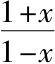
等中的任何一个；f（x，y）将同等地表达形式x+y，x-2y，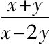
等中任何一个．根据同样的记号原则，如果在任一函数f（x）中，我们将x变成1，结果将表达为形式f（1）；如果在同一函数中我们将x变成0，结果将表达为形式f（0）．因此，如果f（x）表示函数
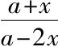
，f（1）将表示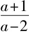
，而f（0）将表示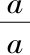
．9.定义 任何函数f（x）——其中x是一个逻辑符号，或者是一个只允许取值0和1的量的符号——称为是展开的，如果它被化成形式ax+b（1-x），这里a和b通过使该结果与由之得到它的函数相等来确定．
这个定义假定有可能用设想的形式表示任何函数f（x）．该假定由以下命题所证实．
命题Ⅰ
10.展开其中x是一个逻辑符号的任一函数f（x）．
根据本章中已经肯定的原理，将x视为一个仅允许取值0和1的量的符号是合法的．
因此假定
f（x）=ax+b（1-x），
使x=1，我们有
f（1）=a．
在同一方程中，再使x=0，我们有
f（0）=b．
于是a和b的值得到确定，在第一个方程中替换它们，我们有
f（x）=f（1）x+f（0）（1-x） （1）
作为所寻求的展开．[9]无论函数f（x）的形式如何，方程的右边都足以表示这个函数．因为x视作量的符号仅允许取值0和1，而对于这些值中的每一个，展开式
f（1）x+f（0）（1-x）
取与函数f（x）相同的值．
作为一个例子，我们来展开函数
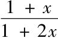
．这里，当x=1时，我们得f（1）=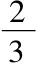
，当x=0时，我们得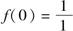
，或1.因此所求表达式为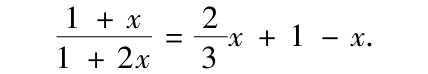
而这个方程对于允许符号x取的每个值都满足．
命题Ⅱ
展开包含任意个数的逻辑符号的一个函数．
我们以讨论有两个符号x和y的情形作为开始，并用f（x，y）表示要展开的函数．
首先，把f（x，y）看成单独x的一个函数，应用一般定理（1）展开它，我们有
f（x，y）=f（1，y）x+f（0，y）（1-x）， （2）
其中f（1，y）表示当我们把所设函数中的x记为1时所得，而f（0，y）表示当我们把所说的函数中的x记为0时所得．
现取出系数f（1，y），将它看成y的一个函数，接着展开它，我们有
f（1，y）=f（1，1）y+f（1，0）（1-y）， （3）
其中f（1，1）表示当我们把f（1，y）中的y记为1时所得，而f（1，0）表示当我们把f（1，y）中的y记为0时所得．
同样地，系数f（0，y）展开后给出
f（0，y）=f（0，1）y+f（0，0）（1-y）． （4）
将（2）中的f（1，y），f（0，y）替换为它们在（3）和（4）中的得到的值，我们有
f（x，y）=f（1，1）xy+f（1，0）x（1-y）+f（0，1）（1-x）y+f（0，0）（1-x）（1-y） （5）
为所求展开式．这里f（1，1）表示当我们使其中的x=1，y=1时f（x，y）所得；f（1，0）表示当我们使其中的x=1，y=0时f（x，y）所得，其余依此类推．
因此，如果f（x，y）表示函数
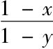
，我们得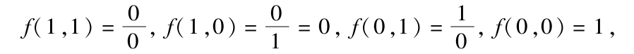
由此给定函数的展开式为
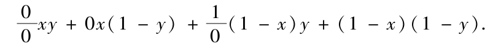
在下一章我们将会看到，形式
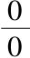
和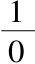
（前者对于数学家来说以不定量的符号著称）在上面这样的表达式中可以有非常重要的逻辑解释．其次，假设我们要展开的函数有三个符号，对此我们可以表示为一般形式f（x，y，z）．按照前面的步骤进行，我们得到
f（x，y，z）=f（1，1，1）xyz+f（1，1，0）xy（1-z）+f（1，0，1）x（1-y）z
+f（1，0，0）x（1-y）（1-z）+f（0，1，1）（1-x）yz
+f（0，1，0）（1-x）y（1-z）+f（0，0，1）（1-x）（1-y）z
+f（0，0，0）（1-x）（1-y）（1-z），
其中f（1，1，1）表示当我们使其中的x=1，y=1，z=1时f（x，y，z）所得，其余依此类推．
11.现在容易看出确定任何已给函数的展开式的一般规律，并且不难把进行展开的方法简化成一种规则．但在表达这样一种规则之前，预先给出以下评论将是方便的：
我们已经得到的每种形式的展开式包括一些项——其中涉及到符号x，y等，再乘上系数——其中不涉及那些符号．因此f（x）的展开式包括两项x和1-x，分别乘上系数f（1）和f（0）．f（x，y）的展开式包括四项xy，x（1-y），（1-x）y和（1-x）（1-y），分别乘上系数f（1，1），f（1，0），f（0，1），f（0，0）．对于前一情形中的项x，1-x，后一情形中的项xy，x（1-y）等，我们将称其为展开式的分支.显然它们在形式上独立于要展开的函数的形式．在分支xy中，x和y称为因子．
因此一般的展开规则将由两部分组成，首先是构造展开式的分支，其次是确定它们各自的系数．具体如下：
第一，展开任何涉及符号x，y，z的函数．按照以下方式构成一系列分支：令第一个分支是这些符号之积；在此积中将任何符号z改成1-z，作为第二个分支．然后在这两个分支中将任何其他符号y改成1-y，作为另外两个分支．接着在这样得到的四个分支中将任何其他符号x改成1-x，作为四个新分支等直到穷尽可能的改变数．
第二，找出任何分支的系数．如果那个分支包含x作为一个因子，则将原来函数中的x改成1；但是如果它包含1-x作为一个因子，则将原来函数中的x改成0.关于符号y，z等应用相同的规则：最终计算出的这样发生改变的函数值就是所求的系数．
每个分支乘以其各自的系数后的和就是所求的展开式．
12.值得注意的是，一个函数可以关于它不显含的符号展开．因此，如果按照规则我们来求函数1-x关于符号x和y的展开式，就有
当x=1 且y=1 给定函数=0．
x=1 且y=0 给定函数=0．
x=0 且y=1 给定函数=1．
x=0 且y=0 给定函数=1．
由此展开式为
1-x=0xy+0x（1-y）+（1-x）y+（1-x）（1-y）.
这是一个正确的展开式．项（1-x）y和（1-x）（1-y）之和产生函数1-x．
因此根据规则，符号1关于符号x展开得
x+1-x．
关于x和y展开，得到
xy+x（1-y）+（1-x）y+（1-x）（1-y）.
类似地，关于任何一组符号展开，它将产生包括那些符号的所有可能分支的一个系列．
13.关于一般展开式的性质可以适当地多说几句．作为例证，我们来考虑一般定理（5），它提供了具有两个逻辑符号的函数的展开类型．
首先，当x和y是本章中曾讨论过的那种量的符号时，无论函数f（x，y）具有怎样的代数形式，该定理都是完全真实的和可理解的，因此它可以被明白无误地应用于将符号解释从逻辑系统转换为上述量的系统，与最终恢复逻辑解释之间的分析过程的任何阶段．
其次，当x和y是逻辑符号时，倘若函数f（x，y）的形式表示的是一个类或事物的汇集，在此情形等式右边总是逻辑上可解释的，那么该定理是完全真实的和可理解的．例如，如果函数f（x，y）表示函数1-x+xy，则应用这一定理我们得
1-x+xy=xy+0x（1-y）+（1-x）y+（1-x）（1-y），
=xy+（1-x）y+（1-x）（1-y），
而这一结果是可理解的和真实的．
于是我们可以认为该定理对于上述那种量的符号总是真实的和可理解的；对于逻辑符号当可解释的时候总是真实的和可理解的．因此无论何时当它用于本书时，即使所得展开式是不可解释的，符号x，y仍是量的符号和提到的那个特殊种类的符号．
然而尽管展开式并不总是直接可解释的，但是它总是立即将我们引向可解释的结果．于是表达式x-y展开后得到形式
x（1-y）-y（1-x），
它一般来说是不可解释的．我们在思维中无法从是x但不是y的事物类，取出是y但不是X的事物类，因为后一类不包含在前者中．但是如果形式x-y本身出现在一个方程的左边，它的右边是0，展开后我们应该有
x（1-y）-y（1-x）=0.
在下一章我们将证明，如果x和y被看成量的符号和所描述的那种符号，那么以上方程马上可以分解为两个方程
x（1-y）=0，y（1-x）=0，
而当赋予符号x和y逻辑解释后，这些方程在逻辑中就成为直接可解释的．可以说，尽管函数展开后不必成为可解释的，但是方程经过这种处理总是可以化成可解释的形式．
14.以下命题建立了分支的一些重要性质．在其阐述中符号t用来不加区分地表示一个展开式中的任何分支．因此如果展开式是两个符号x和y的函数展开所得，那么t表示四个形式xy，x（1-y），（1-x）y，和（1-x）（1-y）中的任何一个．如有必要就用单个符号表示一个展开式的分支，而为了它们彼此区别，将标以下标区分．于是t1可能用来表示xy，t2用来表示x（1-y），等等．
命题Ⅲ
一个展开式的任一单个分支t满足二重律，其表达式为
t（1-t）=0．
一个展开式的两个不同分支之积等于0，所有分支之和等于1．
第一，考虑特定的分支xy.我们有
xy×xy=x2y2.
但是根据类符号的基本定律，有x2=x，y2=y；因此
xy×xy=xy.
用t表示xy，
t×t=t，
或
t（1-t）=0．
类似地，分支x（1-y）满足同一规律．因为我们有
x2=x，（1-y）2=1-y，
∴｛x（1-y）2=x（1-y），或t（1-t）=0.
由于每个分支的每个因子要么具有形式x，要么具有形式1-x，所以每个因子的平方等于那个因子，从而因子之积，即分支的平方等于该分支；为此用t表示任何分支，我们有
t2=t 或 t（1-t）=0．
第二，任何两个分支的乘积是0.这从方程x（1-x）=0表达的一般符号规律看是显然的；因为在的同一展开式中无论我们考虑什么分支，都将在其中之一至少存在一个因子x，它将对应于其他分支中的一个因子1-x．
第三，一个展开式的所有分支之和是1.这从把两个分支x和1-x相加，或将四个分支xy，x（1-y），（1-x）y，（1-x）（1-y）相加看是显然的．但是它也可以通过将1用任何一组符号展开（V.12）更一般地加以证明．在这一情形，分支的形成和平常一样，而所有系数则是1．
15.我们可以将以下命题与上述命题相联系．
命题Ⅳ
如果V表示任何一列分支之和，它们的系数分别为1，则满足条件
V（1-V）=0．
令t1，t2，…，tn是所论及的分支，则
V=t1+t2+…+tn.
两边平方，并注意到t21=t1，t1t2=0等，我们有
V2=t1+t2+…+tn，
因此
V=V2.
从而
V（1-V）=0.